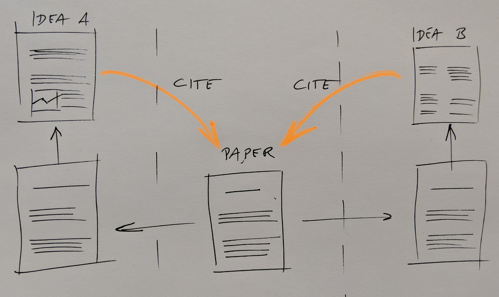
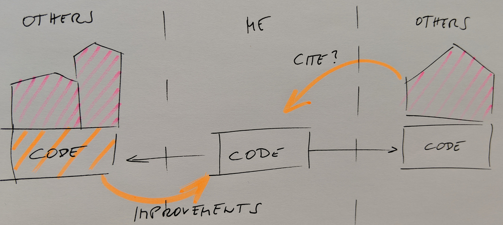
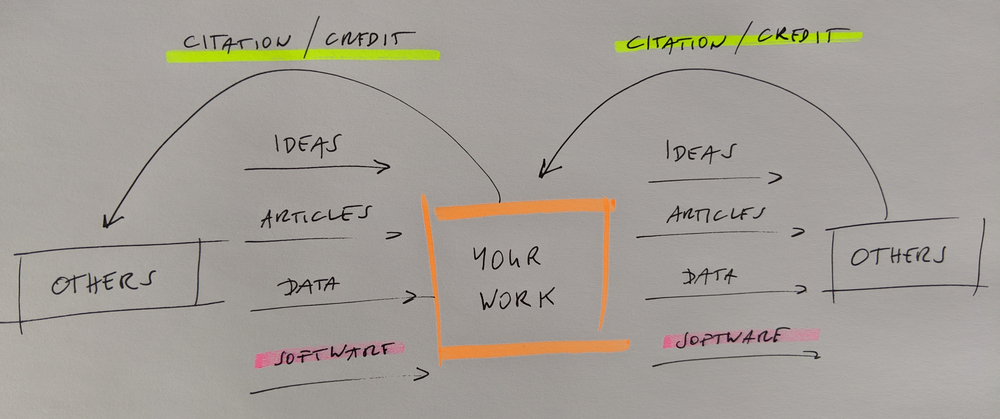
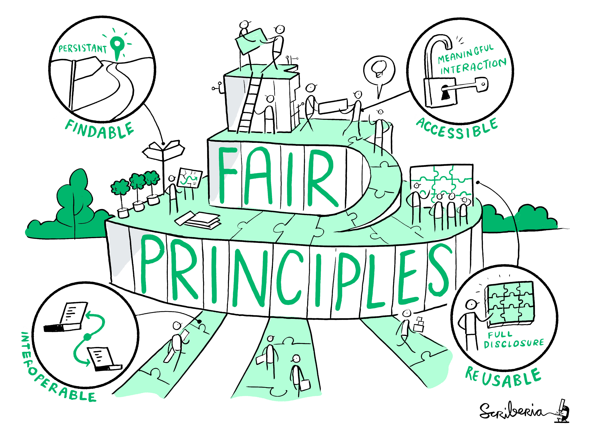

Software licensing focusing on open source
Objectives
Principles of open source licensing
Difference between permissive and copyleft licenses
Frameworks for AI-generated and AI-assisted code
Determine the software license for your project following EU copyright framework
Navigate the Joinup Licensing Assistant to select a compliant license
Understand the licensing distinction between container recipes and container images
Limitations and context of this lesson
This lesson is designed as practical educational material for researchers and research software engineers, not formal legal advice.
EU directives set only minimum requirements in some areas: Member States implement them differently and may add national rules not covered here. For example, some Member States let university researchers retain ownership of the programs they write instead of applying the employer rule in Art. 2(3).
Institutional Context: Employment contracts, grant agreements, and university policies heavily influence software ownership and licensing choices.
This lesson covers only the general principles of open-source reuse, copyright scope, and software adaptation.
If you need formal guidance, the references below can help and so can legal experts, especially if your host institute has a legal services office:
Introduction: What is a Software License?
Under copyright law worldwide, software without an explicit license defaults to All Rights Reserved: nobody else may run, copy, modify, distribute, or build on your code. A software license is how the copyright holder exercises their exclusive rights, granting others permission to reproduce, distribute, modify, and sometimes sublicense the work.
Note that author and copyright holder may differ: under Art. 2(3), an employer exercises the economic rights in code written by an employee on the job, unless a contract says otherwise. The employee is still the author; the employer is who licenses it. This matters in practice, because the person choosing the license for a research project is often not the person who wrote the code.
This lesson focuses on open-source licenses. If your employment terms and institutional policy allow you to open-source the code you write, we recommend doing so. It makes you a better citizen of the research community, since others can reuse, verify, and build on your work. It also protects your future self: code your employer owns and never licenses stays locked behind All Rights Reserved when you change jobs, whereas an open license grants everyone the right to reuse it, including you.
Open-source licenses fall into three families, which differ in what they let downstream users do:
%%{init: {'themeVariables': { 'edgeLabelBackground': '#faf5ff', 'fontSize': '16px' }}}%%
flowchart TB
A["<b>Your code</b>"] -->|"no license"| B["<b>All Rights Reserved</b><br/>Nobody may run,<br/>copy or modify it"]
A -->|"attach a license"| C{"What do you want<br/>downstream users<br/>to be able to do?"}
C --> D["<b>Permissive</b><br/><i>MIT, Apache-2.0</i><br/>'Reuse freely, keep credit'<br/>━━━━━━<br/>Run & modify ✅<br/>Closed product ✅<br/>Must share changes ❌"]
C --> W["<b>Weak Copyleft</b><br/><i>LGPL, MPL-2.0</i><br/>'Share alike, within a boundary'<br/>━━━━━━<br/>Run & modify ✅<br/>Closed product ✅ <i>cond.</i><br/>Must share changes ✅ <i>file/library only</i>"]
C --> E["<b>Copyleft</b><br/><i>GPL-3.0, EUPL-1.2</i><br/>'Share alike'<br/>━━━━━━<br/>Run & modify ✅<br/>Closed product ❌<br/>Must share changes ✅"]
classDef green fill:#e6ffe6,stroke:#2b8a3e,stroke-width:2px,color:#1b4332;
classDef amber fill:#fff3bf,stroke:#f08c00,stroke-width:2px,color:#5c3c00;
classDef yellow fill:#fff9db,stroke:#f59f00,stroke-width:2px,color:#5c3c00;
classDef dashed_red fill:#ffe3e3,stroke:#adb5bd,stroke-width:2px,stroke-dasharray: 5 5,color:#000000;
classDef white fill:#f8f9fa,stroke:#adb5bd,stroke-width:2px,color:#212529;
class D green;
class W amber;
class E yellow;
class B dashed_red;
class A,C white;
Three rules of thumb as an compliment to the diagram:
Copyleft only applies when you share the code. Running modified GPL code on your own machine or cluster creates no obligations.
“Weak” copyleft still has conditions. For example, if you ship an LGPL library inside a closed product, you must still let users modify and debug that library.
Copyleft licenses often don’t mix. Code under two different copyleft licenses may not be combinable, so your choice today decides who can build on your work later.
You will hear copyleft called viral or infectious. The slang is misleading: copyleft doesn’t spread just because GPL code sits next to yours in a repository or container. It only applies when you build GPL code into your own, for example by copying in a snippet. And choosing copyleft is a legitimate project decision, not a sign that a license is harmful.
This lesson covers both directions: choosing terms for software you write, and complying with terms attached to code written by others. The scenarios later work through each case.
Copyright Foundation: Expression vs. Ideas
Under Directive 2009/24/EC, software is protected by copyright as a literary work (Art. 1(1)). But copyright protects only the expression, not the ideas beneath it: Art. 1(2) explicitly excludes “ideas and principles which underlie any element of a computer program, including those which underlie its interfaces.”
Protected: your specific source code text, binaries, container recipes, prompt text, and preparatory design material.
Not protected: mathematical algorithms, scientific models, programming logic, data structures, and interfaces.
The CJEU confirmed this line in SAS Institute v World Programming (C-406/10): a program’s functionality, its programming language, and its data file formats are ideas, not expression, and are therefore outside copyright. Someone may reimplement your algorithm from scratch; they may not copy your code. This is exactly why licenses exist they set the terms for the expression, which is the only part copyright lets you control.
Plagiarism vs. Intellectual Property Rights = Research Ethics vs. Law
This insert can be skipped and left as reading exercise
In academic context it is important to consider also plagiarism and how it relates to copyright and more broadly Intellectual Property Rights (a clear explanation at this page). Plagiarism is the practice of taking somebody else’s ideas or work and claim them as your own: it is the unacknowledged use of another person’s work. Intellectual Property Rights (IPRs) infringement instead is the unauthorised use of another’s work.
IPRs can be classified in two main groups (WTO): i) Copyright and rights related to copyright (computer programs are here) and ii) Industrial properties like trademarks, and inventions (which may include specific technical implementations of systems or code) protected by patents.
In research ethics, plagiarism is one of the three main forms of research misconduct (along with fabrication and falsification, see ALLEA, European Code of Conduct for Research Integrity). Plagiarism is not illegal per se, but it can lead to serious consequences like the retraction of published work. One can engage in plagiarism, without necessarily breaking any IPR law (e.g. write a new book by reusing the plot of an old book that is not under copyright anymore). Copyright infringment instead is illegal and it can result in criminal charges (e.g. fines). Copyright however protects the particular expression of an idea or fact (for example, the specific source code of a program, but not the underlying algorithm itself).
There is no pre-defined “number of lines of code”, “seconds of a song”, or “pixels of an image” that can clearly set the basis for plagiarism or IPR infringement. However in the context of research, it can be possible to use Quotation Exception (in EU, ref) and Fair use (in USA, ref). Fair use has become controversial recently as it is used as legal basis for training large language models based on scraped internet data (See for example Henderson, P., Li, X., Jurafsky, D., Hashimoto, T., Lemley, M. A., & Liang, P. (2023). Foundation models and fair use. Journal of Machine Learning Research, 24(400), 1-79.)
Scope of this Lesson: What Counts as Software?
Across international frameworks (17 U.S.C. § 101 and WIPO model provisions), software is broadly defined as a set of statements or instructions used directly or indirectly in a computer to bring about a certain result. Research software goes well beyond Python scripts, so this lesson covers six asset types find the ones matching your own project, since the scenarios later map onto them:
Source Code original algorithms, or implementations of published methods.
Third-Party Integrations embedded snippets and linked libraries (static or dynamic).
Infrastructure as Code Ansible playbooks, Terraform configs, container recipes (Dockerfile, Apptainer .def).
Container Images built binary snapshots (.sif files, OCI registry images).
AI-Assisted Code generated or refactored with human oversight.
AI Prompt Templates engineered system prompts meeting the threshold of human authorship.
Motivation: Debugging a License Compliance Failure
With the three license families in mind, examine what happens when they collide inside an automated CI/CD pipeline:
%%{init: {'themeVariables': { 'edgeLabelBackground': '#faf5ff' }}}%%
flowchart TB
subgraph box["CI/CD License Compliance Debugging Pipeline"]
A["Paste a snippet copied from somewhere"] --> A2["<b>Build Trigger:</b> Push to my-code-base"]
A2 --> B["Run Compliance Scanner"]
B --> C{"Check Inbound vs.<br/>Outbound Terms"}
C -->|"Target license: Permissive<br/>Pasted snippet: Copyleft"| D["❌ <b>BUILD FAILURE</b> · job #142<br/>Pasted copyleft snippet blocks MIT release"]
D --> E{"Select Patch Option"}
E -->|"A: Keep MIT, add comment '# Originally GPL'"| F["❌ <b>BUILD FAIL</b><br/>Comments do not override license terms"]
E -->|"B: Re-license repo to match the snippet"| G["✅ <b>BUILD PASS</b><br/>Your license now matches the snippet"]
E -->|"C: Reimplement the functionality yourself"| H["✅ <b>BUILD PASS</b><br/>Your own expression, your own license"]
E -->|"D: Delete LICENSE file to silence the scanner"| I["⚠️ <b>SCANNER PASSES LEGAL TRAP</b><br/>Still infringing, and your own code reverts to All Rights Reserved"]
P["<b>Permissive</b><br/>MIT, Apache-2.0, 0BSD"]
WC["<b>Weak Copyleft</b><br/>LGPL, MPL-2.0, EPL-2.0"]
CL["<b>Copyleft</b><br/>GPL-3.0, EUPL-1.2"]
end
P -.->|"What I want for my repo"| C
CL -.->|"What the pasted snippet uses"| C
WC -.->|"Fine only as a separate library"| C
classDef pass fill:#e6ffe6,stroke:#2b8a3e,stroke-width:2px,color:#1b4332;
classDef copyleft fill:#fff9db,stroke:#f59f00,stroke-width:2px,color:#5c3c00;
classDef amber fill:#fff3bf,stroke:#f08c00,stroke-width:2px,color:#5c3c00;
classDef fail fill:#ffe3e3,stroke:#e03131,stroke-width:2px,color:#5c0000;
classDef warning fill:#fff3bf,stroke:#f08c00,stroke-width:2px,color:#5c0000;
classDef neutral fill:#f8f9fa,stroke:#495057,stroke-width:2px,color:#212529;
classDef box_fill fill:#ffffff,stroke:#adb5bd,stroke-width:1px;
class P,G,H pass;
class CL copyleft;
class WC amber;
class D,F fail;
class I warning;
class A,A2,B,C,E neutral;
class box box_fill;
Option D : deleting the LICENSE file makes the scanner quiet without changing anything legally. You are still distributing someone else’s copyleft code without honouring its terms, and you have now stripped your own users of any permission to use your work. A green pipeline is not a compliance result.
Option C works only if you genuinely reimplement the functionality without copying the original expression. As the idea/expression split above establishes, the algorithm is free to reuse the specific code is not. Reading the original closely and retyping a close paraphrase is still copying.
Limitations of AI-Assisted Licensing Advice
Modern software developers and RSEs routinely rely on AI coding assistants
(ChatGPT, Claude, GitHub Copilot) to generate boilerplate, refactor functions,
and answer project setup questions.
However, using these tools for legal or licensing guidance introduces a subtle risk of AI legal bias. AI models are overwhelmingly trained on US-centric web data and legal forum posts, so their outputs default almost universally to US common law concepts such as Fair Use, Work Made for Hire, and Derivative Works.
Developers working under EU statutory frameworks face a different legal reality around exceptions, ownership, and code adaptation. The clearest example is the term you will hear constantly:
US law (17 U.S.C. § 101) formally defines “derivative work”, and AI assistants reach for it to describe almost any code modification.
EU law (Directive 2009/24/EC, Art. 4(1)(b)) does not use that term at all. It grants exclusive rights over “the translation, adaptation, arrangement and any other alteration of a computer program” governed collectively as an adaptation.
Licenses vary: EUPL-1.2 defines “Derivative Works” in its own text as a contractual term, and GPL-2.0 used the phrase too. GPL-3.0 deliberately dropped it in favour of “modify” and “a work based on the Program”, because its drafters recognised the term means different things in different jurisdictions the same problem you face when an AI assistant uses it.
So when an AI assistant tells you a snippet creates a “derivative work”, treat that as a prompt to check the actual question under EU law: is this a statutory adaptation, or a combined work across a technical boundary? The rest of this lesson gives you that EU-aligned framework.
Standardizing In-File Declarations: SPDX Identifiers
Selecting a license is only half the job. Automated scanners and CI/CD pipelines need a machine-readable way to verify compliance per file without parsing legal text.
Managed by the Linux Foundation, SPDX provides standardized short identifiers for licenses (MIT, Apache-2.0, GPL-3.0-only, EUPL-1.2). The REUSE specification, maintained by the FSFE, builds on SPDX to define how every file should declare its copyright and license. Each file starts with two tags:
# SPDX-FileCopyrightText: 2026 Author Name <author@institute.eu>
# SPDX-License-Identifier: MIT
SPDX-FileCopyrightText names the copyright holder and year. This may be your institution rather than you personally; check your institution’s policy.
SPDX-License-Identifier names the license, using the exact SPDX identifier. Watch the suffix: GPL-3.0-only and GPL-3.0-or-later behave differently, so choose deliberately.
The tags only point to a license, so the full license text must also be in your repository. REUSE places one text file per license in a LICENSES/ folder (e.g., LICENSES/MIT.txt). Running reuse lint then checks that every file carries both tags and that every license it names has its text present.
Every scenario below shows the SPDX tagging for its asset type Python scripts, container recipes, and prompt templates each have their own conventions.
License Selection Decision Matrix & Scenario Index
Our decision framework is grounded in the European Commission’s Joinup Licensing Assistant (JLA), which sorts licenses across six criteria: Can (permissions), Must (obligations), Cannot (restrictions), Compatible (interoperability), Law (jurisdiction), and Support (governance).
The scenarios below are independent. Find the row that matches what you are actually building, jump to it, and skip the rest.
If you are… |
Scenario |
Typical Outcome |
Example Licenses |
|---|
Writing everything yourself |
1. Own code |
🟢 Free choice |
MIT, Apache-2.0, BSD-3-Clause
|
Implementing a published algorithm |
2. Algorithm implementation |
🟢 Free choice copyleft if you want reciprocity |
EUPL-1.2, GPL-3.0, AGPL-3.0
|
Pasting in a permissive snippet |
3. Embed permissive |
🟢 Stay permissive, keep notices |
MIT, Apache-2.0, EUPL-1.2, GPL-3.0
|
Pasting in a copyleft snippet |
4. Embed copyleft |
🟡 Strong copyleft likely required |
EUPL-1.2, GPL-3.0
|
Importing or linking a library |
5. Link a library |
🟡 Depends on which copyleft see below |
GPL-3.0, EUPL-1.2, or permissive if weak copyleft
|
Writing a Dockerfile or .def |
6. Container recipe |
🟢 Free choice |
MIT, Apache-2.0, BSD-3-Clause
|
Publishing a built image |
7. Built image |
⚠️ Multi-license bundle |
Governed by each layer’s own terms |
Using Copilot, ChatGPT or Claude |
8. AI-assisted code |
🟢 Free choice, verify for memorization |
MIT, Apache-2.0, EUPL-1.2, GPL-3.0
|
Shipping prompts, weights or datasets |
9. AI workflows & assets |
🟢 Dual-license code vs. assets |
MIT + CC-BY-4.0
|
This lesson covers nine scenarios; a typical session works through three or four. The rest are here for reference when your project changes.
Exercise-1: How do you work with others’ software and ideas?
Licensing-1: Which scenarios typically describe your work?
The text below can be copied to the collaborative
document for an online poll:
## Question: How do you work with other's code?
**Choose many**. Vote by adding an `o` character:
- 1. Writing everything yourself
- votes:
- 2. Implementing a published algorithm
- votes:
- 3. Pasting in a permissive snippet
- votes:
- 4. Pasting in a copyleft snippet
- votes:
- 5. Importing or linking a library
- votes:
- 6. Writing a Dockerfile or .def
- votes:
- 7. Publishing a built image
- votes:
- 8. Using Copilot, ChatGPT, Claude, or similar
- votes:
- 9. Shipping prompts, weights or datasets
- votes:
Exercise-2: How small is a snippet?
Licensing-2: Can you decide from the number of lines?
The text below can be copied to the collaborative document for an online poll:
## Question: Which of these can you safely copy *based only on its size*?
**Choose many**. Vote by adding an `o` character:
- A. A one-line expression: `return max(lo, min(x, hi))`
- votes:
- B. Five lines of ordinary boilerplate for parsing command-line arguments
- votes:
- C. Three unusually written lines copied verbatim from a GPL-licensed solver
- votes:
- D. Twenty lines you wrote independently after reading an algorithm in a paper, without looking at another implementation
- votes:
- E. Anything under 10 lines is too small to be copyrighted
- votes:
- F. None of the above: the number of lines alone does not decide
- votes:
### Follow-up question
For each example, what information would you want to know before reusing or publishing the code?
Solution
The key answer is F: there is no fixed safe number of lines.
Copyright does not use a numerical threshold such as 5, 10, or 20 lines. The important question is whether what has been copied is protected expression. Very short or purely functional code may not meet the originality threshold, while a short but distinctive piece of code may.
A and B: they may be too simple, conventional, or constrained by function to contain protectable expression, but their size alone does not answer the question.
C: being only three lines does not automatically make copied code unprotected. Check its provenance and license.
D: independently implementing the idea or algorithm is different from copying somebody else’s expression of it.
E: there is no “10-line rule”.
Practical rule: if you copied code and are unsure whether it is protected, check where it came from and under which license it was published. Preserve any required notices, or independently implement the underlying idea instead of copying the code.
Module 1: Clean Slate – Authoring Original Code & Algorithms
When writing original code or implementing published algorithms, no third-party license constrains your choice but who owns the code depends on your employment contract and national rules, so check your institution’s policy first.
Scenario 1: Authoring original code and algorithms
You wrote an original algorithm from scratch (in Python, C++, Rust, etc.). Your repository contains only your original source code and dependency specifications (requirements.txt, CMakeLists.txt, Cargo.toml).
Licensing Goal: You want maximum adoption and zero friction for commercial or academic reuse.
Legal Reality: External dependencies remain separate works. Because you only list them and have not bundled third-party code inside your repository, no inbound license terms constrain your choice. This changes if you ship dependencies together with your code, for example in an executable or container image (see Scenario 5 and Scenario 7).
JLA Selection Strategy: To ensure downstream users must keep your copyright notice while granting them maximum flexibility to incorporate your code into both open and proprietary software, you require Incl. Copyright without imposing share-alike conditions (leaving Copyleft/Share a. unselected).
Solution
What to select in the JLA interface:
Can Column: Select Distribute, Modify/merge, and Commercial use
Must Column: Select Incl. Copyright
Support Column: Select OSI approved
Example JLA Matches: MIT, Apache-2.0, BSD-3-Clause
Permissive vs. Public Domain (EU Civil Law Nuance): Public domain dedications (e.g., CC0, Unlicense) attempt to give away all rights. In many EU countries, authors cannot fully waive their rights, especially moral rights such as being named as the author. CC0 handles this with a fallback license, which makes it a good choice for data, but it explicitly grants no patent rights and is not OSI approved, so it is less suited to code. An explicit permissive license like MIT or Apache-2.0 is valid across Europe and is the clearer choice for software.
Credit vs. Citation: Permissive licenses require users to keep your copyright notice in the code. They do not require anyone to cite you in a publication. For academic citation, add a CITATION.cff file to your repository.
Downstream Obligations: Anyone who reuses, modifies, or integrates your code into their work must preserve your copyright notice and license text. They are not required to share their modifications or open-source their downstream projects.
Allowed Inbound Snippets: You can freely embed small third-party code snippets licensed under permissive terms (e.g., MIT, BSD, Apache-2.0, 0BSD), keeping their notices, without affecting your permissive license. Copying copyleft code into your files is different: strong copyleft (e.g., GPL, EUPL) generally requires re-licensing your project, and pasted weak copyleft code does not stay contained either. Pasted MPL-2.0 code makes that file MPL-covered, and pasted LGPL code is treated like GPL. Weak copyleft only lets your code stay permissive when you use it as a separate file or library (see Scenario 4).
In-File Identification (SPDX): Apply standard machine-readable SPDX tags directly at the top of your scripts, following the REUSE specification:
# SPDX-FileCopyrightText: 2026 Author Name <author@institute.eu>
# SPDX-License-Identifier: MIT
import numpy as np
Scenario 2: Choosing reciprocity for your own implementation
You developed a custom solver implementing algorithms from academic literature. You want any downstream improvements, extensions, or modifications to remain open-source and be shared back with the scientific community.
Licensing Goal: You want to enforce reciprocity (share-alike), preventing third parties from incorporating your implementation into proprietary software without sharing their modifications.
Legal Reality: The published algorithm itself is an unprotected idea anyone may implement it independently, as Scenario 1 and the SAS ruling establish. What copyright protects is your specific implementation. Nothing about implementing a published method forces a particular license; copyleft here is your deliberate choice to bind downstream distributors to matching terms.
JLA Selection Strategy: To enforce reciprocal sharing, you must mandate that downstream distributors disclose their modified source code (Disclose source) and license their adaptations or combined works under matching terms (Copyleft/Share a.).
Solution
What to select in the JLA interface:
Can Column: Select Distribute, Modify/merge, and Commercial use
Must Column: Select Incl. Copyright, Disclose source, and Copyleft/Share a.
Support Column: Select OSI approved
Example JLA Matches: EUPL-1.2, GPL-3.0, AGPL-3.0
Copyleft Mechanics (EUPL vs. GPL Nuance): GPL-3.0 is the standard global copyleft license, but EUPL-1.2 is specifically tailored for European institutions. EUPL-1.2 is officially published in 23 EU language versions (each with equal legal validity) and sets the applicable law and courts by reference to the licensor’s EU Member State. Its compatibility clause works in one direction only: EUPL code can be combined into a GPL project and distributed under GPL, but GPL code cannot be re-licensed under EUPL.
AGPL and network use: AGPL-3.0 adds one rule to GPL-3.0: if you modify the software and let people use it over a network (for example a web portal or API), you must offer them the source code, even if you never distribute copies. Consider it if your group runs research software as an online service.
The trade-offs of strong copyleft: Reciprocity comes at a cost. Some companies and projects avoid copyleft code entirely, so you may reach fewer users than with a permissive license. Strong copyleft licenses are also frequently incompatible with each other, so a future collaborator on a differently-licensed copyleft project may be unable to use your work at all (Scenario 5 covers this). Neither choice is better: Scenario 1 optimizes for reach, this scenario for keeping improvements open.
Choose deliberately, early: Changing your license later is only possible if you hold all the rights. Once others have contributed code, you need every contributor’s agreement to re-license.
Downstream Obligations: Anyone who distributes your code or a modified version of it must provide complete access to the corresponding source code under the same copyleft license and preserve your original copyright notices. Running modified code internally, without distributing it, creates no obligation (except under AGPL for network use).
Allowed Inbound Snippets: You can freely embed code snippets licensed under permissive terms (e.g., MIT, Apache-2.0, BSD), keeping their notices, or public domain waivers (CC0). Copyleft snippets must be compatible with your license, and compatibility is directional: a GPL project can take EUPL or GPL snippets, but a GPL snippet in an EUPL project would require the combined work to be distributed under GPL. When in doubt, only embed copyleft code under the same license as your project. You cannot embed closed-source or proprietary code snippets.
In-File Identification (SPDX): Apply standard machine-readable SPDX tags directly at the top of your scripts, following the REUSE specification. If you choose GPL, use GPL-3.0-only or GPL-3.0-or-later rather than plain GPL-3.0, since the two behave differently when a new GPL version is released:
# SPDX-FileCopyrightText: 2026 Author Name <author@institute.eu>
# SPDX-License-Identifier: EUPL-1.2
import numpy as np
Module 2: The Dependency Minefield – Inbound Code & Linking
Embedding third-party snippets or linking against external libraries introduces boundaries that can constrain your license choice. How far those boundaries reach depends on which license the inbound code carries.
Scenario 3: Embedding permissively licensed third-party code
You are building an RSE tool and copied a helper function or utility snippet from a third-party project licensed under a permissive license (e.g., MIT or Apache-2.0) directly into one of your source files.
Licensing Goal: You want to maintain a permissive default for your project while properly acknowledging and legally respecting the embedded third-party code.
Legal Reality: Permissive licenses explicitly grant you permission to copy, modify, and embed their code into your repository. However, embedding permissive code does not make the original third-party copyright disappear: you must preserve the original copyright notice and license terms for that specific snippet.
JLA Selection Strategy: Because inbound permissive code gives you maximum licensing flexibility, your overall repository can remain permissively licensed. To reflect this, require that notices are kept (Incl. Copyright) without imposing reciprocal sharing constraints (leaving Copyleft/Share a. unselected).
Solution
What to select in the JLA interface:
Can Column: Select Distribute, Modify/merge, and Commercial use
Must Column: Select Incl. Copyright
Support Column: Select OSI approved
Example JLA Matches: MIT, Apache-2.0, BSD-3-Clause
Notice Preservation Nuance: Permissive licenses are flexible, but they are not license-free. Your repository license covers your code. It does not relicense the embedded snippet that code stays under its original license and its original copyright holder’s terms. You are distributing one file containing two separately licensed contributions, which is why both notices must appear.
What “keeping the notice” requires: Keep the original copyright line and the license text. An SPDX identifier only points to a license, so the full text must also be in your repository, typically as one file per license in a LICENSES/ folder (e.g., LICENSES/Apache-2.0.txt). Apache-2.0 adds two small requirements: if you modified the snippet, state that you changed it, and if the original project has a NOTICE file, carry its relevant content along.
Check the source before copying: Confirm the license in the original project’s own LICENSE file, not in a blog post or second-hand claim. A project with no license file is All Rights Reserved, so its code cannot be copied. Note that Stack Overflow content is licensed CC BY-SA, a share-alike license, not a permissive one, so non-trivial Stack Overflow snippets belong in Scenario 4.
Downstream Obligations: Downstream users receive your project under your primary permissive license (e.g., MIT), but they must preserve both your overall copyright notice and the specific third-party notices attached to embedded snippets.
Allowed Inbound Snippets: In addition to the embedded permissive snippet, you can freely embed other permissively licensed code (MIT, BSD, Apache-2.0) or public domain waivers (CC0). Embedding strong copyleft code (GPL, EUPL) generally requires re-licensing your repository to match. Weak copyleft does not stay contained when pasted either: pasted MPL-2.0 code makes that file MPL-covered, and pasted LGPL code is treated like GPL. Weak copyleft only lets your code stay permissive when used as a separate file or library.
In-File Identification (SPDX): Mark your file’s own license at the top, and mark the embedded snippet with the REUSE snippet tags so its boundaries are machine-readable:
# SPDX-FileCopyrightText: 2026 Author Name <author@institute.eu>
# SPDX-License-Identifier: MIT
import numpy as np
# SPDX-SnippetBegin
# SPDX-SnippetCopyrightText: 2024 External Contributor <dev@external-lib.org>
# SPDX-License-Identifier: Apache-2.0
def fast_matrix_solver(matrix):
# Embedded algorithm implementation
return np.linalg.solve(matrix, np.eye(len(matrix)))
# SPDX-SnippetEnd
def main():
pass
Scenario 4: Embedding copyleft third-party code
You are building a software tool and copied a non-trivial code snippet from a third-party project licensed under a copyleft license (e.g., GPL-3.0 or EUPL-1.2) directly into one of your source files. This is the situation behind the failed build (job #142) in the Motivation section.
Licensing Goal: Comply with legal requirements imposed by the inbound copyleft code while ensuring your overall repository remains legally compliant.
Legal Reality: Copying a non-trivial copyleft snippet into your source files creates a single combined work, so copyleft licensing generally extends to your whole project. Moving the snippet into a separate file of the same program does not change this. “Non-trivial” matters: a snippet too short or purely functional to qualify as the author’s own intellectual creation (Art. 1(3)) may not carry copyright at all. There is no word count or line count that draws this line if you are unsure, assume it is protected and either comply or reimplement.
JLA Selection Strategy: If you keep the snippet, your repository must adopt reciprocal sharing terms, so configure JLA to require source code disclosure (Disclose source) and reciprocal licensing (Copyleft/Share a.).
Solution
What to select in the JLA interface:
Can Column: Select Distribute, Modify/merge, and Commercial use
Must Column: Select Incl. Copyright, Disclose source, and Copyleft/Share a.
Support Column: Select OSI approved
Example JLA Matches: GPL-3.0, EUPL-1.2
Match the snippet’s license: JLA lists both, but you do not get to choose freely. Your project must take a license compatible with the snippet: a GPL snippet means GPL, because GPL code cannot be re-licensed under EUPL. An EUPL-1.2 snippet can go either way: its compatibility clause allows the combined project to be distributed under GPL-3.0 if your ecosystem requires it.
Re-licensing is not the only fix: Re-licensing your project is only possible if you hold the rights, so check with co-authors and your institution first. The alternatives are to reimplement the functionality yourself (a genuine rewrite, not a close paraphrase), to find a permissively licensed alternative, or to ask the snippet’s copyright holder for permission to use it under your license, in writing.
Stack Overflow snippets: Stack Overflow content is licensed CC BY-SA (version 2.5, 3.0, or 4.0 depending on when it was posted), a share-alike license. Credit non-trivial snippets with a link to the answer and the author’s name. Creative Commons considers CC BY-SA 4.0 compatible with GPL-3.0 in one direction, so such snippets can go into a GPL-3.0 project, but not into an MIT project.
Downstream Obligations: Anyone to whom you distribute your repository must receive full access to the source code under the same copyleft license terms and preserve all copyright notices. Running the code internally, without distributing it, creates no obligation.
Allowed Inbound Snippets: Because your overall repository is now governed by a copyleft license, you can safely embed code from permissive sources (MIT, BSD, CC0), keeping their notices, as well as compatible copyleft sources. Note that Apache-2.0 is compatible with GPL-3.0 but not with GPL-2.0. You cannot embed proprietary, closed-source code or snippets from incompatible copyleft licenses.
In-File Identification (SPDX): Mark your file’s own license at the top, and mark the embedded copyleft snippet with the REUSE snippet tags so the original author remains credited:
# SPDX-FileCopyrightText: 2026 Author Name <author@institute.eu>
# SPDX-License-Identifier: GPL-3.0-or-later
import numpy as np
# SPDX-SnippetBegin
# SPDX-SnippetCopyrightText: 2023 External Researcher <researcher@university.org>
# SPDX-License-Identifier: GPL-3.0-or-later
def optimized_fft_filter(data_signal):
# Embedded copyleft algorithm implementation
return np.fft.fft(data_signal)
# SPDX-SnippetEnd
def main():
pass
Module 3: Dependency Linking & Packaging
When software incorporates external dependencies, whether by dynamic linking, static compiling, or bundling binaries into container images licensing obligations expand beyond your own written source code. This module covers how dependency boundaries, build automation scripts, and packaged container artifacts affect legal compliance under the Joinup Licensing Assistant (JLA) framework.
Scenario 5: Linking against a GPL-licensed library
You are developing a software application that imports or links against an external software library licensed under GPL-3.0 (e.g., importing a GPL Python package or linking a C/C++ static/shared library).
Licensing Goal: Ensure legal compliance while using copyleft libraries as core dependencies in your software project.
Legal Reality: Whether linking creates a combined work is genuinely unsettled, and often has to be decided case by case. The FSF’s position is that linking a GPL library statically or dynamically creates a combined work; some legal scholars and Commission EUPL guidance disagree, particularly for dynamic linking through a stable API. Most Member States have no case law on this, so no firm general rule can be stated. The guidance below follows the conservative, widely-adopted reading.
JLA Selection Strategy: Under the conservative reading, linking to a GPL library means the combined program you distribute must be released under matching reciprocal terms, so configure JLA to require source code disclosure (Disclose source) and reciprocal licensing (Copyleft/Share a.).
Solution
What to select in the JLA interface:
Can Column: Select Distribute, Modify/merge, and Commercial use
Must Column: Select Incl. Copyright, Disclose source, and Copyleft/Share a.
Support Column: Select OSI approved
Example JLA Matches: GPL-3.0, EUPL-1.2
The safe default, not settled law: On the conservative reading, your own files must be under a GPL-compatible license (GPL itself, or permissive licenses such as MIT or BSD), and the combined program you distribute is under GPL. EUPL-1.2 also works for your own files through its compatibility clause, but the combined program then goes out under GPL anyway.
What you ship matters: Static linking copies the library’s code into your binary, so you always distribute it. With dynamic linking (including a Python import), the library stays a separate file. If you publish only your own source and users install the GPL library themselves, the risk is much lower, although the FSF would still expect your code to be GPL-compatible. If you bundle the library, in an executable, a container image, or a compiled binary, GPL clearly applies to what you ship.
Alternatives if you want to stay permissive:
Find a permissively licensed alternative library.
Use an LGPL library instead: with dynamic linking, your own code can stay permissive, provided you keep its notices and do not restrict users from modifying the library or reverse engineering to debug those modifications.
Use an EUPL-1.2 library through dynamic linking: Commission guidance says this does not make your program a derivative work (guidance, not case law). Static linking or copying EUPL code is treated as a combined work.
Call a GPL tool as a separate program (e.g., via the command line) rather than importing it. This is generally treated as two programs communicating, not a combined work.
Copyleft licenses are not compatible with each other: Two strong copyleft licenses can each demand that the combined work use their terms, which makes the combination undistributable. The classic trap is GPL-2.0-only: without the “or later” clause you cannot upgrade to GPL-3.0 to resolve a conflict, so GPL-2.0-only code cannot be combined with GPL-3.0 or Apache-2.0 code at all. Always check the exact SPDX identifier GPL-2.0-only and GPL-2.0-or-later behave very differently.
Downstream Obligations: Anyone to whom you distribute the application must receive full access to your source code under GPL-compatible terms, along with upstream copyright notices and the build scripts needed to recompile it. Running the software internally, without distributing it, creates no such obligation though note that AGPL-3.0 extends this to network use, such as a web application built on an AGPL library.
Allowed Inbound Code & Dependencies: Your project can import or include other permissively licensed packages (MIT, BSD, Apache-2.0) and public domain waivers (CC0). However, all code linked together in the final executable or runtime environment must satisfy GPL compatibility; for example, Apache-2.0 is compatible with GPL-3.0 but not with GPL-2.0.
Check your dependencies: Tools such as pip-licenses (Python) list the license of every installed package. Most package ecosystems have an equivalent. Run one once per project.
In-File Identification (SPDX): Apply standard machine-readable SPDX tags directly at the top of your main scripts:
# SPDX-FileCopyrightText: 2026 Author Name <author@institute.eu>
# SPDX-License-Identifier: GPL-3.0-or-later
import gpl_licensed_solver # External GPL dependency: conservative reading requires GPL compatibility
def solve_system(data):
return gpl_licensed_solver.compute(data)
Scenario 6: Authoring container recipes and environment specifications
You are creating a Dockerfile, Apptainer .def file, Conda environment.yml, or build recipe to automate the setup of your research environment. The recipe itself contains setup instructions, shell commands, and package lists.
Licensing Goal: You want maximum adoption and reuse of your build automation script so other researchers can freely adapt and build upon your workflow.
Legal Reality: Build recipes and configuration scripts are plain-text source code, separate from the software binaries they download at build time. The build instructions you write are your expression but note that a very short recipe (a FROM line plus two RUN commands) may be too trivial to meet the Art. 1(3) originality threshold and may not attract copyright at all. The same applies to a plain list of package names in an environment.yml. Longer, non-obvious recipes clearly do attract copyright.
JLA Selection Strategy: To allow anyone to reuse or adapt your container recipe without restrictions, require that your copyright notice is kept (Incl. Copyright) while leaving reciprocal requirements (Copyleft/Share a.) unselected.
Solution
What to select in the JLA interface:
Can Column: Select Distribute, Modify/merge, and Commercial use
Must Column: Select Incl. Copyright
Support Column: Select OSI approved
Example JLA Matches: MIT, Apache-2.0, BSD-3-Clause
License short recipes anyway: Even if a recipe may fall below the originality threshold, a two-line SPDX header removes any doubt for people who want to reuse it, and tools such as reuse lint expect every file to be marked. For very small configuration files, some projects use CC0-1.0.
Recipe vs. Image Nuance: The license applied to a Dockerfile covers only the recipe instructions, not the software packages installed inside the container when docker build runs. Writing apt-get install for a GPL package, or FROM ubuntu, names the software without copying it. A permissively licensed Dockerfile can therefore install both permissive and copyleft packages without legal conflict. This applies to the recipe only: once you build and publish the resulting image, you are distributing every package inside it (see Scenario 7).
Downstream Obligations: Anyone who reuses or adapts your build recipe must preserve your original copyright notice and license text. Keeping the recipe in your repository alongside the LICENSES/ folder covers this.
Allowed Inbound Snippets: Copying build steps from other people’s recipes follows the same rules as source code. Steps from permissively licensed recipes or public domain code can be included freely, keeping their notices (Scenario 3). A non-trivial block from a copyleft project’s recipe falls under Scenario 4. In practice, most build commands are short and generic, so this rarely applies.
In-File Identification (SPDX): Place SPDX tags as comments at the top of your Dockerfile or recipe file:
# SPDX-FileCopyrightText: 2026 Author Name <author@institute.eu>
# SPDX-License-Identifier: MIT
FROM ubuntu:24.04
RUN apt-get update && apt-get install -y python3 python3-pip
COPY solver.py /app/solver.py
Scenario 7: Distributing pre-built container images
You compiled and published a pre-built container image (e.g., pushing a compiled Docker image to Docker Hub, GitHub Container Registry, or an institutional registry, or sharing an Apptainer .sif file) containing an OS layer, runtime binaries, dependencies, and your application code.
Licensing Goal: Safely distribute compiled container images without violating the license terms of any software layer or binary included inside the image.
Legal Reality: A compiled container image is a multi-license aggregate bundle, not a single combined work. Distributing pre-built binaries makes you a distributor of every package inside, so source-availability obligations apply to the copyleft components (Linux base packages, coreutils, GPL libraries). But those packages sitting in the same filesystem as your application do not make your application a derivative of them: this is mere aggregation. Your own code keeps whatever license you chose; you simply also carry distributor obligations for the copyleft software you are shipping alongside it.
JLA Selection Strategy: Because a container image combines multiple distinct software components, JLA is used to evaluate constituent component obligations. When distributing compiled binaries containing copyleft layers, source disclosure requirements (Disclose source) must be fulfilled for those specific layers.
Solution
What to select in the JLA interface:
Can Column: Select Distribute and Commercial use
Must Column: Select Incl. Copyright and Disclose source
Support Column: Select OSI approved
JLA Outcome: No single license applies. Use JLA per component to check each one’s obligations, then record the aggregate in your image metadata.
Aggregation covers independent programs only: Mere aggregation applies to programs that simply live side by side in the image, such as your application next to bash or coreutils. If your application actually imports or links a GPL library inside the image, that relationship is a linking question, covered by Scenario 5.
Multi-License Aggregation Nuance: Applying a permissive license (like MIT) to your application code inside the container does not override or erase the GPL/LGPL obligations of base system packages installed in /usr/lib or /usr/bin. Distributing the built image binary makes you a distributor of all installed packages.
What counts as distribution: Pushing an image to a public registry, or sharing an image or .sif file with people outside your organisation, is distribution. Keeping an image in a private registry used only within your own organisation is generally not. If you are unsure, treat it as distribution.
Downstream Obligations: You must ensure downstream users can obtain the corresponding source for the copyleft components you shipped. Publishing your Dockerfile documents the build but does not by itself satisfy this the GPL asks for the source of the binaries actually distributed. In practice, most research images rely on unmodified upstream distribution packages, and pointing to the distributor’s public source archives is common practice. The exact rules differ between GPL versions, however, and many distribution packages are GPL-2.0, so for images on public registries the safest option is to keep the relevant source available yourself. If you modify or rebuild a copyleft component yourself, you must provide that source directly.
Watch for non-redistributable software: The bigger risk in an image is often proprietary software you are not allowed to redistribute at all, such as parts of NVIDIA CUDA, Intel’s math libraries, MATLAB runtimes, or commercial solvers. Their redistribution terms are set by each vendor’s license, so check them before publishing.
Generate a Software Bill of Materials (SBOM): Before publishing an image, use tools such as Syft or Trivy to list every package inside it, with versions and licenses. This SBOM is the complete record of what you distribute, and it shows whether any non-redistributable software is included. Consider publishing it alongside the image.
In-File Identification (Metadata Annotations): Document the multi-license nature of the aggregate bundle using standard OCI (Open Container Initiative) image labels inside your Dockerfile. The licenses label is a summary: a base image contains many more licenses than it lists, so the SBOM remains the complete record.
# SPDX-FileCopyrightText: 2026 Author Name <author@institute.eu>
# SPDX-License-Identifier: MIT
FROM ubuntu:24.04
LABEL org.opencontainers.image.authors="author@institute.eu"
# OCI standard image annotations, displayed by registries and tools
LABEL org.opencontainers.image.title="My Research Pipeline"
# Summary only; see the published SBOM for the full list of licenses
LABEL org.opencontainers.image.licenses="MIT AND GPL-3.0-or-later"
LABEL org.opencontainers.image.vendor="My Institute Name"
LABEL org.opencontainers.image.description="Includes Ubuntu 24.04 base layers (GPL/LGPL) and custom solver (MIT)"
COPY solver.py /app/solver.py
Module 4: Emerging Workflows & AI
AI-assisted development tools and machine learning models introduce unique legal challenges regarding copyright ownership, training data memorization, and behavioral restrictions. This module addresses how to license projects built with AI code generation tools and how to package research software that bundles AI models, weights, and datasets alongside source code.
Scenario 8: AI-assisted code generation
You used AI tools (e.g., GitHub Copilot, ChatGPT, Claude) to write functions, unit tests, or documentation for your research software repository.
Licensing Goal: Apply a permissive license (MIT or Apache-2.0) to your repository with confidence, without incurring hidden copyright infringement or copyleft obligations from code the AI model reproduced from its training data.
Legal Reality: Unmodified AI-generated outputs lack human authorship and are generally not eligible for copyright protection under current EU and international legal standards. Most real code, however, is a mix of human and AI contribution: you prompt, select, edit, and integrate. Where the line falls between AI output and your own work is unsettled and varies between Member States; there is no percentage or line-count threshold. The more you design, choose, edit, and integrate, the stronger your claim that the result is your work. Separately, if an LLM reproduces a substantial copyrighted code snippet verbatim from its training data (memorization), that output snippet retains its original copyright and license obligations.
JLA Selection Strategy: To ensure maximum adoption and academic reuse for your overall codebase, require that your copyright notice is kept (Incl. Copyright) while avoiding share-alike constraints (leaving Copyleft/Share a. unselected), supported by automated compliance checks.
Solution
What to select in the JLA interface:
Can Column: Select Distribute, Modify/merge, and Commercial use
Must Column: Select Incl. Copyright
Support Column: Select OSI approved
Example JLA Matches: MIT, Apache-2.0, BSD-3-Clause
License your repository as normal: Your license covers everything you authored. Any purely AI-generated parts that are not protected by copyright are free to use anyway, so the license does no harm there. Many AI tools’ terms state that the output belongs to you as far as any rights exist, but a contract cannot create copyright that the law does not grant.
Checking for memorized code: Memorization is uncommon for everyday code, but it does happen, especially for well-known code that appears many times in training data. Practical checks:
Be most careful with long, distinctive functions and implementations of well-known algorithms. Short boilerplate and unit tests are low risk.
If you use GitHub Copilot, check whether the setting that blocks suggestions matching public code is enabled for your account or organisation.
If a suggestion looks suspiciously polished, search for a distinctive line of it on GitHub. If it appears in a copyleft project, treat it as that project’s code (Scenario 4).
Marking AI-generated code: Some projects and AI tool terms require contributors to disclose AI involvement via a commit trailer, a PR checkbox, or an in-file comment. Even where it is optional, marking AI-assisted sections is increasingly recommended practice: it records provenance, signals to reviewers where extra scrutiny is warranted, and makes later authorship or infringement questions much easier to resolve. Check the contribution guidelines of any project you submit to.
Use AI to write code, not to decide licensing: As noted in the section on the limitations of AI-assisted licensing advice, AI assistants tend to apply US legal concepts. Check licensing questions against the actual license text.
Downstream Obligations: Downstream users must preserve your copyright notice for the repository. They are free to reuse, modify, and integrate your code into commercial or open-source projects.
Allowed Inbound Snippets: You can include permissively licensed code, public domain code (CC0), and AI-generated snippets that you have checked for verbatim reproduction of training data, as described above.
In-File Identification (SPDX): Apply standard machine-readable SPDX tags directly at the top of your scripts, and mark AI-assisted code where it appears:
# SPDX-FileCopyrightText: 2026 Author Name <author@institute.eu>
# SPDX-License-Identifier: MIT
def filter_sensor_data(raw_readings: list[float]) -> list[float]:
"""Cleans raw sensor data (written with AI assistance and human review)."""
return [reading for reading in raw_readings if reading > 0.0]
Scenario 9: Packaging AI workflows, datasets, and model weights
You are developing research software that includes source code alongside trained machine learning model weights (.pt, .safetensors) and benchmark datasets.
Licensing Goal: Apply a clear licensing structure, with different licenses for different parts of the repository, that makes both the software source code and the non-code assets (data, weights) open and reusable under appropriate legal frameworks.
Legal Reality: Standard software licenses (MIT, GPL) are written for source code and fit datasets and model parameters poorly. Datasets may attract the EU sui generis database right where there has been substantial investment in obtaining, verifying, or presenting their contents. Model weights are a harder case: they are the numerical values learned during training, neither code nor a database, and whether they attract any copyright protection in the EU is genuinely unsettled. Because of this uncertainty, applying an explicit license to weights is about setting clear terms for your users, not about relying on a settled legal right.
JLA Selection Strategy: Use JLA to select an OSI-approved open-source license for the executable code component (Incl. Copyright selected), while using Creative Commons licenses (e.g., CC-BY-4.0 or CC0-1.0) for the dataset and weight files.
Solution
What to select in the JLA interface:
Can Column: Select Distribute, Modify/merge, and Commercial use
Must Column: Select Incl. Copyright
Support Column: Select OSI approved
Example JLA Matches: MIT, Apache-2.0 (for the code component)
Code vs. Data/Weights: Avoid applying software licenses like GPL or MIT to raw datasets or model weights their terms reference source code, object code, and linking, which leaves users guessing about what applies. Use CC-BY-4.0 or CC0-1.0 for non-code assets instead. CC-BY-4.0 requires credit; CC0-1.0 requires nothing, which makes it easier for data that others will combine with many other datasets. Note that this pattern is sometimes called “dual-licensing”, but that term usually means offering the same work under two licenses.
You can only license what is yours: If your dataset contains material you did not create, such as scraped text, images, or other people’s data, your license covers only your own contribution; the original content keeps its own rights. If your dataset contains personal data, data protection rules apply regardless of the license.
Open weights are not always open source: If you fine-tuned an existing model, its license still applies to what you built on it. Many models published with open weights come with their own licenses restricting, for example, commercial use or certain applications. Check the base model’s license before fine-tuning and publishing.
Behavioral licenses (OpenRAIL): Licenses such as OpenRAIL impose usage restrictions (e.g., prohibiting specific harmful uses). This can be a reasonable choice, but it means they do not qualify as OSI-approved open source and will not appear in standard JLA queries.
Downstream Obligations: Downstream users must keep your copyright notice and license text for the code (under your chosen software license) and give credit for the model weights and data as the corresponding Creative Commons license requires. For academic citation, add a CITATION.cff file to your repository.
Allowed Inbound Assets: You may combine permissively licensed Python code with CC-BY-4.0 datasets, provided the attribution files clearly separate code licenses from data/weight licenses. Models published with open weights can be included only under the terms of their own licenses (see above).
In-File Identification (SPDX / Licensing Structure): Binary files such as weights and datasets cannot contain comments, so REUSE marks them with a companion .license file next to each one (e.g., climate_weights.safetensors.license) or with a single REUSE.toml file covering whole folders. State in your README which license covers which folder, and fill in the license fields on platforms such as Zenodo or Hugging Face. In your code, document the structure in the header:
# SPDX-FileCopyrightText: 2026 Author Name <author@institute.eu>
# SPDX-License-Identifier: MIT
#
# Note: Source code is licensed under MIT.
# Model weights in /models/ and datasets in /data/ are licensed under CC-BY-4.0.
from safetensors.torch import load_file
def load_pipeline():
weights = load_file("models/climate_weights.safetensors")
return weights
Best Practices: Attaching a License to Your Repository
Once you have selected a license using the JLA, you must officially attach it to your repository so automated scanners, package registries, and downstream users can verify your terms.
1. Adding the Root LICENSE File
Always place the full text of your chosen license in a plain-text file named LICENSE or LICENSE.txt at the root of your repository.
Exact Legal Text: Copy the standard text directly from spdx.org/licenses or choosealicense.com.
Copyright Header: Ensure you fill in the copyright year and copyright holder line at the top of the license text:
Copyright (c) 2026 [Author Name or Institution Name]
Do Not Edit Terms: Never modify the legal wording of standard licenses (e.g., removing clauses from GPL or MIT). Edited texts are no longer the license they claim to be: compliance scanners cannot classify them, package registries may flag them, and downstream users have to get their own legal review before touching your code. If a standard license does not fit, pick a different standard license.
2. Documenting License Status in README.md
Add a dedicated License section near the bottom of your repository’s README.md file, along with a machine-readable badge:
## License
This project is licensed under the MIT License - see the [LICENSE](LICENSE) file for details.
[](https://opensource.org/licenses/MIT)
3. Automated Compliance with the REUSE Standard
For multi-asset research repositories containing code, data, container build recipes, and prompt templates, follow the FSFE REUSE Initiative standard:
Include License Texts: Place full license files inside a LICENSES/ directory (e.g., LICENSES/MIT.txt, LICENSES/GPL-3.0-or-later.txt).
Add In-File SPDX Headers: Label every source file, build script, and prompt file with SPDX tags.
Verify Compliance: Run the automated REUSE linter in your CI/CD pipeline:
# Install and run REUSE compliance check
pip install reuse
reuse lint
When reuse lint passes, every asset in your codebase carries a declared, machine-readable license that downstream users can check.
Summary: Resolving the Compliance Pipeline
When developing research software, license compliance is not an afterthought to debug at the end of a project, it is a proactive design choice. By using the Joinup Licensing Assistant (JLA) framework to align your repository license with your inbound dependencies from day one, your pipeline is far less likely to fail on a license conflict late in the project.
The diagram below illustrates how selecting a compatible license upfront ensures your code passes automated compliance checks and results in a legally sound release:
%%{init: {'themeVariables': { 'edgeLabelBackground': '#faf5ff', 'fontSize': '16px' }}}%%
flowchart TB
subgraph local["① What you do differently now before pushing"]
direction LR
A["Paste a snippet<br/>copied from somewhere"] --> L["Identify its<br/>license family"] --> S["Choose a compatible<br/>license + add<br/>SPDX headers"]
end
subgraph ci["② The same pipeline as before"]
direction LR
T["<b>Build Trigger:</b><br/>Push to my-code-base"] --> B["Run Compliance<br/>Scanner"] --> C{"Check Inbound vs.<br/>Outbound Terms"}
end
S --> T
C -->|"terms match"| P["✅ <b>BUILD PASS</b> · job #143<br/>Compliant, reusable release"]
classDef pass fill:#e6ffe6,stroke:#2b8a3e,stroke-width:2px,color:#1b4332;
classDef neutral fill:#f8f9fa,stroke:#495057,stroke-width:2px,color:#212529;
classDef fix fill:#e7f5ff,stroke:#1c7ed6,stroke-width:2px,color:#0b3d6b;
classDef box_fill fill:#ffffff,stroke:#adb5bd,stroke-width:1px;
class P pass;
class A,T,B,C neutral;
class L,S fix;
class local,ci box_fill;
Compare this with the failing pipeline at the start of the lesson: the pipeline itself is identical. Nothing about the scanner changed the only difference is two decisions made before pushing.
Scenario Mapping Across the Pipeline
Choosing Your Own Terms (Scenario 1, Scenario 2 & Scenario 3): When you write original code, implement a published algorithm, or embed only permissive snippets, no inbound license constrains you the choice follows your goal. Pick permissive (MIT, Apache-2.0) for maximum adoption, or copyleft (EUPL-1.2, GPL-3.0) if you want downstream improvements shared back. Either way, preserve any third-party notices attached to code you embedded.
Handling Inbound Copyleft (Scenario 4 & Scenario 5): Copying a non-trivial copyleft snippet (e.g., CC BY-SA code from Stack Overflow, or a GPL fragment) creates a combined work. Linking against a copyleft library may do the same, depending on the license and the linking method. In both cases, selecting a compatible copyleft license upfront (GPL-3.0 or EUPL-1.2) satisfies the reciprocal terms and lets the scanner pass and checking the exact SPDX identifier first avoids the GPL-2.0-only incompatibility trap.
Packaging and Build Automation (Scenario 6 & Scenario 7): Keep plain-text build recipes (Dockerfiles) permissively licensed for maximum reuse, while annotating compiled container image binaries as multi-license aggregate bundles to satisfy embedded base-layer obligations.
AI Assets and Dual-Licensing (Scenario 8 & Scenario 9): Run code-similarity scanners to catch LLM training memorization before releasing AI-assisted code, and apply dual-licensing to separate executable software code (MIT) from non-code datasets and model weights (CC-BY-4.0).
Standardized Distribution: Adding machine-readable SPDX headers across every script, Dockerfile, and prompt template lets reuse lint confirm that every asset has a declared, documented license. Note what this does and does not prove: the linter verifies that declarations exist and are well-formed, not that they are legally correct or mutually compatible. Automation makes your intent auditable it does not replace the judgment calls in the scenarios above.
Glossary
Glossary of terms (click to expand)
- 0BSD
Zero-Clause BSD, a permissive license so minimal it doesn’t even require keeping the copyright notice.
- Adaptation
EU term (Art. 4(1)(b)) for translating, arranging, or altering a program; roughly the US derivative work.
- AGPL-3.0
Strong copyleft that also requires sharing source when users interact with modified software over a network.
- All Rights Reserved
Default for unlicensed software: nobody but the copyright holder may run, copy, modify, or share it.
- Apache-2.0
Permissive license like MIT, plus an explicit patent grant and a requirement to note changes you made.
- API
Application Programming Interface: the defined way one program calls another. The idea of an interface is not protected by copyright; the code implementing it is.
- Author
The person who created the program; not always the copyright holder.
- BSD-3-Clause
Permissive license like MIT, plus a clause forbidding use of the authors’ names to promote derived products.
- CC BY-SA
Creative Commons share-alike license used for code posted on Stack Overflow; adaptations must carry the same terms, much like copyleft.
- CC-BY-4.0
Creative Commons license allowing any reuse if the creator is credited; suited to data, documentation, and models rather than code.
- CC0
Creative Commons tool waiving rights as far as the law allows, placing a work as close to the public domain as possible.
- CI/CD
Continuous Integration / Continuous Delivery: automated pipelines that build, test, and check code on every push, including license compliance checks.
- CJEU
Court of Justice of the European Union; its rulings interpret EU law for all Member States.
- Combined work
One work formed by merging separately licensed code, e.g. embedding a snippet or static linking.
- Compatibility
Whether two licenses allow their code to be combined and distributed together.
- Container image
A built binary snapshot (.sif, OCI image) bundling many packages under many licenses.
- Container recipe
The plain-text build instructions (Dockerfile, .def); source code in its own right.
- Copyleft
Licenses requiring distributed adaptations to use matching terms (GPL-3.0, EUPL-1.2).
- Copyright holder
Whoever holds the economic rights and can license the work: the author, employer, or assignee.
- Corresponding source
The full source and build scripts needed to rebuild the exact binaries you distributed.
- Derivative work
US term (17 U.S.C. § 101) for a work based on another; EU law says adaptation.
- Distribution
Giving copies to others outside your organisation; this is what triggers copyleft obligations.
- Dynamic linking
Loading a separate library at runtime; whether it creates a combined work is unsettled.
- Economic rights
Exclusive rights to copy, adapt, and distribute; often exercised by the employer (Art. 2(3)).
- EPL-2.0
Eclipse Public License, a weak copyleft license applying at the file/module level.
- EUPL-1.2
The European Commission’s copyleft license, available in 23 EU languages.
- Expression vs. ideas
Copyright protects your code, not the underlying algorithms, functionality, or interfaces.
- FSF
Free Software Foundation, the US non-profit that publishes the GPL family of licenses.
- GPL
GNU General Public License, the most widely used strong copyleft license. GPL-3.0 is the current version; GPL-2.0 is still common.
- Inbound licensing
The licenses on others’ code you bring into your project.
- JLA
Joinup Licensing Assistant, the Commission’s tool for comparing licenses.
- LGPL
Weak copyleft for libraries; your app may use other terms if it allows modifying and debugging the library.
- LLM
Large Language Model, the technology behind AI assistants such as ChatGPT, Copilot, and Claude.
- Memorization
When an AI model reproduces training code verbatim; that code keeps its original license.
- Mere aggregation
Separate programs shipped side by side; copyleft does not spread between them.
- MIT
The most widely used permissive license: short, simple, and requires only that the copyright and license notice be kept.
- MPL-2.0
Mozilla Public License, a weak copyleft license applying per file: modified MPL files stay MPL, new files can use any license.
- OCI
Open Container Initiative, the standard format for container images used by Docker, Podman, and registries.
- OpenRAIL
Behavioral licenses for AI models that forbid specific harmful uses; because they restrict use, they are not OSI open source.
- Originality threshold
A program is protected only if it is the author’s own intellectual creation (Art. 1(3)).
- OSI
Open Source Initiative, the non-profit that approves licenses as meeting the Open Source Definition.
- Outbound licensing
The license you choose for your own project.
- Permissive
Licenses allowing any reuse if notices are kept (MIT, Apache-2.0, BSD).
- Reciprocity
The copyleft requirement to share adaptations under matching terms.
- REUSE
FSFE standard for per-file license declarations; reuse lint checks they exist, not that they are correct.
- RSE
Research Software Engineer: a professional who develops and maintains software used in research.
- SPDX identifier
Standard license tag in file headers, e.g. MIT, GPL-3.0-or-later.
- SPDX version suffixes
-only and -or-later: GPL-2.0-only cannot move to GPL-3.0; GPL-2.0-or-later can.
- Static linking
Copying library code into your binary at build time; generally creates a combined work.
- Sublicense
Passing on permissions under your own terms; allowed by MIT, generally not by copyleft.
- Sui generis database right
EU right protecting databases built with substantial investment; unclear for model weights.
- Viral / infectious
Misleading slang for copyleft; it does not spread by mere contact.
- Weak copyleft
Reciprocity limited to a file (MPL-2.0) or library (LGPL).
Social coding and open software - What can you do to get credit for your code and to allow reuse
In this lesson we will discuss how and why to share code and data, what kind of licenses are used in what situation, and how software can be cited.
We will try to connect software licenses to FAIR principles, give practical recommendations for starting, contributing, and reusing code and help you navigating and deciding on licenses.
Why software licenses matter
You find some great code or data that you want to reuse for your own publication (good for the original author: you will cite them and maybe other people who cite you will cite them).
You need to modify the code a little bit, or you remix the data a bit.
When it comes time to publish, you realize there is no license.
Now we have a problem:
You manage to publish the paper without the software/data but others cannot build on your software and data and you don’t get as many citations as you could.
Or, you cannot publish it at all if the journal requires that papers should come with data and software so that they are reproducible.
This lesson is about how to avoid this situation for you and others.
Prerequisites
No computational prerequisites required for this lesson.
20 min
Social coding
45 min
Software licensing focusing on open source
20 min
Software citation
10 min
Sharing data
Social coding
Objectives
Get an overview of motivations, benefits, but also risks of sharing and reusing code.
Learn to identify whether you can use other peoples software.
Discussion/questions/poll: basics of sharing
Instructor note
These questions 1-4 below can be used as a starting point and copied to the collaborative document or form input for an online poll.
Alternatively, they can be discussed in voice or free-form text (discussion box below).
Social-1: Think about if and how you share
Did you ever share your code? If yes, what motivated you? Come up with reasons for sharing your scripts/code/data.
Also think about reasons for not sharing.
Comparing sharing papers and sharing code

Citation as one form of academic credit to motivate sharing papers.
Sharing papers and academic credit:
The goal is maximum visibility and maximum reuse.
The more interesting science is done referencing my paper, the better for me.
Nobody actively tries to limit the reach of their papers.

Different ways we can benefit from sharing code.
Sharing code:
“I did all the ground work and they get to do the interesting science?”
Sharing code and encouraging derivative work may boost your academic impact.
But will your work be visible if it is used two levels deep down?
Journal policies as motivation for sharing
From Science editorial policy:
From Nature editorial policy:
However a study showed that despite these policies, many people still do not share their code 😞. This paper includes samples of charming author responses such as:
Motivation for open source software
Instructor note
We revisit answers to Question 1 (above).
Enable derivative work
Do not lock yourself out of own code
Attract developers who want to be able to show the coding work on their CVs
Tightly regulated domains require open source
Open-source software (OSS) can lead to more engagement from industry which may lead to more impact
If it’s not open, it is not likely to become standard
Sharing software is also scary
Instructor note
We revisit answers to Question 2 (above).
Fear of being scooped: A license can avoid it, and you can release when you are ready. Anyway, it is very unlikely that others will understand your code and publish before you without involving you in a collaboration. Sharing is a form of publishing.
Exposes possibly “ugly code”: In practice almost nobody will judge the quality of your code. “Software, once written, is never really finished” (N. Asparouhova).
Others may find bugs and mistakes: Isn’t this good? Would you not like to use a code which gives people the chance to locate bugs? If you don’t release, people will assume there are bugs anyway.
Others may require support and ask too many questions: This can become a problem: use tools and community and protect your time. You aren’t required to support anyone. You can also “archive” a repository to disable most forms of interaction (issues, PRs). Also a note in README on support level helps.
Fear of losing control over the direction of the project: Open source does not mean everybody can change your version.
“Bad” derivative projects may appear: It will be clear which is the official version.
Code reusability: What contributes to reusability?
What contributes to you being able to reuse stuff that others make, and others (or you) being able to reuse your stuff? When you find a repository with code you would like to reuse, you may look at the following things to determine its reusability:
Instructor note
This can be now reconnected to Question 4 (above).
Date of last code change: Is the project abandoned?
Release history: How about stability and backwards-compatibility?
Versioning: Will it be painful to upgrade?
Number of open pull requests and issues: Are they followed-up?
Installation instructions: Will it be difficult to get it running?
Example: Will it be difficult to get started?
License: Am I allowed to use it?
Contribution guide: How to contribute and decision process?
Code of conduct: How to make clear which behaviors are unacceptable and discouraged? How violations of Code of conduct will be handled?
Trust and community: Somebody you trust recommended it?
… most of which you have learned or will learn during this CodeRefinery workshop!
Social-2: Discussion about “You aren’t required to support anyone”
Have you experienced an implicit expectation of support?
Supporting all requests can lead to overworking and mental health issues.
Not supporting requests can also induce guilt.
Most projects are maintained by 1 or 2 persons.
Most projects cannot retain contributors for a longer time. Interests change. “Casual contributors are like tourists visiting NYC for a weekend” (Nadia Asparouhova, book below).
If you maintain all projects that you start forever, at some point it may be difficult to start new projects.
What are your experiences? Do you agree with the above thoughts?
Book recommendation: Nadia Asparouhova (formerly Nadia Eghbal): “Working in Public: The Making and Maintenance of Open Source Software (Stripe Press)”
How our work connects to the work of others

Whether and what we can share depends on how we obtained the components.
Our work depends on outputs from others. Research of others depends on our outputs.
Whether you can share your output depends on how you obtained your input.
A repository that is private today might become public one day.
Sometimes “OTHERS” are you yourself in the future in a different group/job.
Our code often starts by changing other code: derivative work.
Software licenses matter. And this is what we will discuss in the next episode.
Software licensing focusing on open source
Objectives
Principles of open source licensing
Difference between permissive and copyleft licenses
Frameworks for AI-generated and AI-assisted code
Determine the software license for your project following EU copyright framework
Navigate the Joinup Licensing Assistant to select a compliant license
Understand the licensing distinction between container recipes and container images
Limitations and context of this lesson
This lesson is designed as practical educational material for researchers and research software engineers, not formal legal advice.
EU directives set only minimum requirements in some areas: Member States implement them differently and may add national rules not covered here. For example, some Member States let university researchers retain ownership of the programs they write instead of applying the employer rule in Art. 2(3).
Institutional Context: Employment contracts, grant agreements, and university policies heavily influence software ownership and licensing choices.
This lesson covers only the general principles of open-source reuse, copyright scope, and software adaptation.
If you need formal guidance, the references below can help and so can legal experts, especially if your host institute has a legal services office:
EUR Directive 2009/24/EC
Compendium of U.S. Copyright Office Practices (3rd Ed.) – Chapter 700, Section 721: Computer Programs
Chinese Regulations on Computer Software Protection,(search:”计算机软件保护条例”)
Joinup Licensing Assistant,JLA
FSFE REUSE Initiative
Research Software Alliance Policy Directory
Introduction: What is a Software License?
Under copyright law worldwide, software without an explicit license defaults to All Rights Reserved: nobody else may run, copy, modify, distribute, or build on your code. A software license is how the copyright holder exercises their exclusive rights, granting others permission to reproduce, distribute, modify, and sometimes sublicense the work.
Note that author and copyright holder may differ: under Art. 2(3), an employer exercises the economic rights in code written by an employee on the job, unless a contract says otherwise. The employee is still the author; the employer is who licenses it. This matters in practice, because the person choosing the license for a research project is often not the person who wrote the code.
This lesson focuses on open-source licenses. If your employment terms and institutional policy allow you to open-source the code you write, we recommend doing so. It makes you a better citizen of the research community, since others can reuse, verify, and build on your work. It also protects your future self: code your employer owns and never licenses stays locked behind All Rights Reserved when you change jobs, whereas an open license grants everyone the right to reuse it, including you.
Open-source licenses fall into three families, which differ in what they let downstream users do:
Three rules of thumb as an compliment to the diagram:
Copyleft only applies when you share the code. Running modified GPL code on your own machine or cluster creates no obligations.
“Weak” copyleft still has conditions. For example, if you ship an LGPL library inside a closed product, you must still let users modify and debug that library.
Copyleft licenses often don’t mix. Code under two different copyleft licenses may not be combinable, so your choice today decides who can build on your work later.
You will hear copyleft called viral or infectious. The slang is misleading: copyleft doesn’t spread just because GPL code sits next to yours in a repository or container. It only applies when you build GPL code into your own, for example by copying in a snippet. And choosing copyleft is a legitimate project decision, not a sign that a license is harmful.
This lesson covers both directions: choosing terms for software you write, and complying with terms attached to code written by others. The scenarios later work through each case.
Copyright Foundation: Expression vs. Ideas
Under Directive 2009/24/EC, software is protected by copyright as a literary work (Art. 1(1)). But copyright protects only the expression, not the ideas beneath it: Art. 1(2) explicitly excludes “ideas and principles which underlie any element of a computer program, including those which underlie its interfaces.”
Protected: your specific source code text, binaries, container recipes, prompt text, and preparatory design material.
Not protected: mathematical algorithms, scientific models, programming logic, data structures, and interfaces.
The CJEU confirmed this line in SAS Institute v World Programming (C-406/10): a program’s functionality, its programming language, and its data file formats are ideas, not expression, and are therefore outside copyright. Someone may reimplement your algorithm from scratch; they may not copy your code. This is exactly why licenses exist they set the terms for the expression, which is the only part copyright lets you control.
Plagiarism vs. Intellectual Property Rights = Research Ethics vs. Law
This insert can be skipped and left as reading exercise
In academic context it is important to consider also plagiarism and how it relates to copyright and more broadly Intellectual Property Rights (a clear explanation at this page). Plagiarism is the practice of taking somebody else’s ideas or work and claim them as your own: it is the unacknowledged use of another person’s work. Intellectual Property Rights (IPRs) infringement instead is the unauthorised use of another’s work.
IPRs can be classified in two main groups (WTO): i) Copyright and rights related to copyright (computer programs are here) and ii) Industrial properties like trademarks, and inventions (which may include specific technical implementations of systems or code) protected by patents.
In research ethics, plagiarism is one of the three main forms of research misconduct (along with fabrication and falsification, see ALLEA, European Code of Conduct for Research Integrity). Plagiarism is not illegal per se, but it can lead to serious consequences like the retraction of published work. One can engage in plagiarism, without necessarily breaking any IPR law (e.g. write a new book by reusing the plot of an old book that is not under copyright anymore). Copyright infringment instead is illegal and it can result in criminal charges (e.g. fines). Copyright however protects the particular expression of an idea or fact (for example, the specific source code of a program, but not the underlying algorithm itself).
There is no pre-defined “number of lines of code”, “seconds of a song”, or “pixels of an image” that can clearly set the basis for plagiarism or IPR infringement. However in the context of research, it can be possible to use Quotation Exception (in EU, ref) and Fair use (in USA, ref). Fair use has become controversial recently as it is used as legal basis for training large language models based on scraped internet data (See for example Henderson, P., Li, X., Jurafsky, D., Hashimoto, T., Lemley, M. A., & Liang, P. (2023). Foundation models and fair use. Journal of Machine Learning Research, 24(400), 1-79.)
Scope of this Lesson: What Counts as Software?
Across international frameworks (17 U.S.C. § 101 and WIPO model provisions), software is broadly defined as a set of statements or instructions used directly or indirectly in a computer to bring about a certain result. Research software goes well beyond Python scripts, so this lesson covers six asset types find the ones matching your own project, since the scenarios later map onto them:
Source Code original algorithms, or implementations of published methods.
Third-Party Integrations embedded snippets and linked libraries (static or dynamic).
Infrastructure as Code Ansible playbooks, Terraform configs, container recipes (
Dockerfile, Apptainer.def).Container Images built binary snapshots (
.siffiles, OCI registry images).AI-Assisted Code generated or refactored with human oversight.
AI Prompt Templates engineered system prompts meeting the threshold of human authorship.
Motivation: Debugging a License Compliance Failure
With the three license families in mind, examine what happens when they collide inside an automated CI/CD pipeline:
Option D : deleting the
LICENSEfile makes the scanner quiet without changing anything legally. You are still distributing someone else’s copyleft code without honouring its terms, and you have now stripped your own users of any permission to use your work. A green pipeline is not a compliance result.Option C works only if you genuinely reimplement the functionality without copying the original expression. As the idea/expression split above establishes, the algorithm is free to reuse the specific code is not. Reading the original closely and retyping a close paraphrase is still copying.
Limitations of AI-Assisted Licensing Advice
Modern software developers and RSEs routinely rely on AI coding assistants (ChatGPT, Claude, GitHub Copilot) to generate boilerplate, refactor functions, and answer project setup questions.
However, using these tools for legal or licensing guidance introduces a subtle risk of AI legal bias. AI models are overwhelmingly trained on US-centric web data and legal forum posts, so their outputs default almost universally to US common law concepts such as Fair Use, Work Made for Hire, and Derivative Works.
Developers working under EU statutory frameworks face a different legal reality around exceptions, ownership, and code adaptation. The clearest example is the term you will hear constantly:
US law (17 U.S.C. § 101) formally defines “derivative work”, and AI assistants reach for it to describe almost any code modification.
EU law (Directive 2009/24/EC, Art. 4(1)(b)) does not use that term at all. It grants exclusive rights over “the translation, adaptation, arrangement and any other alteration of a computer program” governed collectively as an adaptation.
Licenses vary:
EUPL-1.2defines “Derivative Works” in its own text as a contractual term, andGPL-2.0used the phrase too.GPL-3.0deliberately dropped it in favour of “modify” and “a work based on the Program”, because its drafters recognised the term means different things in different jurisdictions the same problem you face when an AI assistant uses it.So when an AI assistant tells you a snippet creates a “derivative work”, treat that as a prompt to check the actual question under EU law: is this a statutory adaptation, or a combined work across a technical boundary? The rest of this lesson gives you that EU-aligned framework.
Standardizing In-File Declarations: SPDX Identifiers
Selecting a license is only half the job. Automated scanners and CI/CD pipelines need a machine-readable way to verify compliance per file without parsing legal text.
Managed by the Linux Foundation, SPDX provides standardized short identifiers for licenses (
MIT,Apache-2.0,GPL-3.0-only,EUPL-1.2). The REUSE specification, maintained by the FSFE, builds on SPDX to define how every file should declare its copyright and license. Each file starts with two tags:SPDX-FileCopyrightTextnames the copyright holder and year. This may be your institution rather than you personally; check your institution’s policy.SPDX-License-Identifiernames the license, using the exact SPDX identifier. Watch the suffix:GPL-3.0-onlyandGPL-3.0-or-laterbehave differently, so choose deliberately.The tags only point to a license, so the full license text must also be in your repository. REUSE places one text file per license in a
LICENSES/folder (e.g.,LICENSES/MIT.txt). Runningreuse lintthen checks that every file carries both tags and that every license it names has its text present.Every scenario below shows the SPDX tagging for its asset type Python scripts, container recipes, and prompt templates each have their own conventions.
License Selection Decision Matrix & Scenario Index
Our decision framework is grounded in the European Commission’s Joinup Licensing Assistant (JLA), which sorts licenses across six criteria: Can (permissions), Must (obligations), Cannot (restrictions), Compatible (interoperability), Law (jurisdiction), and Support (governance).
The scenarios below are independent. Find the row that matches what you are actually building, jump to it, and skip the rest.
If you are…
Scenario
Typical Outcome
Example Licenses
Writing everything yourself
1. Own code
🟢 Free choice
MIT,Apache-2.0,BSD-3-ClauseImplementing a published algorithm
2. Algorithm implementation
🟢 Free choice copyleft if you want reciprocity
EUPL-1.2,GPL-3.0,AGPL-3.0Pasting in a permissive snippet
3. Embed permissive
🟢 Stay permissive, keep notices
MIT,Apache-2.0,EUPL-1.2,GPL-3.0Pasting in a copyleft snippet
4. Embed copyleft
🟡 Strong copyleft likely required
EUPL-1.2,GPL-3.0Importing or linking a library
5. Link a library
🟡 Depends on which copyleft see below
GPL-3.0,EUPL-1.2, or permissive if weak copyleftWriting a Dockerfile or
.def6. Container recipe
🟢 Free choice
MIT,Apache-2.0,BSD-3-ClausePublishing a built image
7. Built image
⚠️ Multi-license bundle
Governed by each layer’s own terms
Using Copilot, ChatGPT or Claude
8. AI-assisted code
🟢 Free choice, verify for memorization
MIT,Apache-2.0,EUPL-1.2,GPL-3.0Shipping prompts, weights or datasets
9. AI workflows & assets
🟢 Dual-license code vs. assets
MIT+CC-BY-4.0This lesson covers nine scenarios; a typical session works through three or four. The rest are here for reference when your project changes.
Exercise-1: How do you work with others’ software and ideas?
Licensing-1: Which scenarios typically describe your work?
The text below can be copied to the collaborative document for an online poll:
Exercise-2: How small is a snippet?
Licensing-2: Can you decide from the number of lines?
The text below can be copied to the collaborative document for an online poll:
Solution
The key answer is F: there is no fixed safe number of lines.
Copyright does not use a numerical threshold such as 5, 10, or 20 lines. The important question is whether what has been copied is protected expression. Very short or purely functional code may not meet the originality threshold, while a short but distinctive piece of code may.
A and B: they may be too simple, conventional, or constrained by function to contain protectable expression, but their size alone does not answer the question.
C: being only three lines does not automatically make copied code unprotected. Check its provenance and license.
D: independently implementing the idea or algorithm is different from copying somebody else’s expression of it.
E: there is no “10-line rule”.
Practical rule: if you copied code and are unsure whether it is protected, check where it came from and under which license it was published. Preserve any required notices, or independently implement the underlying idea instead of copying the code.
Module 1: Clean Slate – Authoring Original Code & Algorithms
When writing original code or implementing published algorithms, no third-party license constrains your choice but who owns the code depends on your employment contract and national rules, so check your institution’s policy first.
Scenario 1: Authoring original code and algorithms
You wrote an original algorithm from scratch (in Python, C++, Rust, etc.). Your repository contains only your original source code and dependency specifications (
requirements.txt,CMakeLists.txt,Cargo.toml).Licensing Goal: You want maximum adoption and zero friction for commercial or academic reuse.
Legal Reality: External dependencies remain separate works. Because you only list them and have not bundled third-party code inside your repository, no inbound license terms constrain your choice. This changes if you ship dependencies together with your code, for example in an executable or container image (see Scenario 5 and Scenario 7).
JLA Selection Strategy: To ensure downstream users must keep your copyright notice while granting them maximum flexibility to incorporate your code into both open and proprietary software, you require
Incl. Copyrightwithout imposing share-alike conditions (leavingCopyleft/Share a.unselected).Solution
What to select in the JLA interface:
Can Column: Select
Distribute,Modify/merge, andCommercial useMust Column: Select
Incl. CopyrightSupport Column: Select
OSI approvedExample JLA Matches:
MIT,Apache-2.0,BSD-3-ClausePermissive vs. Public Domain (EU Civil Law Nuance): Public domain dedications (e.g.,
CC0,Unlicense) attempt to give away all rights. In many EU countries, authors cannot fully waive their rights, especially moral rights such as being named as the author. CC0 handles this with a fallback license, which makes it a good choice for data, but it explicitly grants no patent rights and is not OSI approved, so it is less suited to code. An explicit permissive license likeMITorApache-2.0is valid across Europe and is the clearer choice for software.Credit vs. Citation: Permissive licenses require users to keep your copyright notice in the code. They do not require anyone to cite you in a publication. For academic citation, add a
CITATION.cfffile to your repository.Downstream Obligations: Anyone who reuses, modifies, or integrates your code into their work must preserve your copyright notice and license text. They are not required to share their modifications or open-source their downstream projects.
Allowed Inbound Snippets: You can freely embed small third-party code snippets licensed under permissive terms (e.g., MIT, BSD, Apache-2.0, 0BSD), keeping their notices, without affecting your permissive license. Copying copyleft code into your files is different: strong copyleft (e.g., GPL, EUPL) generally requires re-licensing your project, and pasted weak copyleft code does not stay contained either. Pasted MPL-2.0 code makes that file MPL-covered, and pasted LGPL code is treated like GPL. Weak copyleft only lets your code stay permissive when you use it as a separate file or library (see Scenario 4).
In-File Identification (SPDX): Apply standard machine-readable SPDX tags directly at the top of your scripts, following the REUSE specification:
Scenario 2: Choosing reciprocity for your own implementation
You developed a custom solver implementing algorithms from academic literature. You want any downstream improvements, extensions, or modifications to remain open-source and be shared back with the scientific community.
Licensing Goal: You want to enforce reciprocity (share-alike), preventing third parties from incorporating your implementation into proprietary software without sharing their modifications.
Legal Reality: The published algorithm itself is an unprotected idea anyone may implement it independently, as Scenario 1 and the SAS ruling establish. What copyright protects is your specific implementation. Nothing about implementing a published method forces a particular license; copyleft here is your deliberate choice to bind downstream distributors to matching terms.
JLA Selection Strategy: To enforce reciprocal sharing, you must mandate that downstream distributors disclose their modified source code (
Disclose source) and license their adaptations or combined works under matching terms (Copyleft/Share a.).Solution
What to select in the JLA interface:
Can Column: Select
Distribute,Modify/merge, andCommercial useMust Column: Select
Incl. Copyright,Disclose source, andCopyleft/Share a.Support Column: Select
OSI approvedExample JLA Matches:
EUPL-1.2,GPL-3.0,AGPL-3.0Copyleft Mechanics (EUPL vs. GPL Nuance):
GPL-3.0is the standard global copyleft license, butEUPL-1.2is specifically tailored for European institutions. EUPL-1.2 is officially published in 23 EU language versions (each with equal legal validity) and sets the applicable law and courts by reference to the licensor’s EU Member State. Its compatibility clause works in one direction only: EUPL code can be combined into a GPL project and distributed under GPL, but GPL code cannot be re-licensed under EUPL.AGPL and network use:
AGPL-3.0adds one rule to GPL-3.0: if you modify the software and let people use it over a network (for example a web portal or API), you must offer them the source code, even if you never distribute copies. Consider it if your group runs research software as an online service.The trade-offs of strong copyleft: Reciprocity comes at a cost. Some companies and projects avoid copyleft code entirely, so you may reach fewer users than with a permissive license. Strong copyleft licenses are also frequently incompatible with each other, so a future collaborator on a differently-licensed copyleft project may be unable to use your work at all (Scenario 5 covers this). Neither choice is better: Scenario 1 optimizes for reach, this scenario for keeping improvements open.
Choose deliberately, early: Changing your license later is only possible if you hold all the rights. Once others have contributed code, you need every contributor’s agreement to re-license.
Downstream Obligations: Anyone who distributes your code or a modified version of it must provide complete access to the corresponding source code under the same copyleft license and preserve your original copyright notices. Running modified code internally, without distributing it, creates no obligation (except under AGPL for network use).
Allowed Inbound Snippets: You can freely embed code snippets licensed under permissive terms (e.g., MIT, Apache-2.0, BSD), keeping their notices, or public domain waivers (CC0). Copyleft snippets must be compatible with your license, and compatibility is directional: a GPL project can take EUPL or GPL snippets, but a GPL snippet in an EUPL project would require the combined work to be distributed under GPL. When in doubt, only embed copyleft code under the same license as your project. You cannot embed closed-source or proprietary code snippets.
In-File Identification (SPDX): Apply standard machine-readable SPDX tags directly at the top of your scripts, following the REUSE specification. If you choose GPL, use
GPL-3.0-onlyorGPL-3.0-or-laterrather than plainGPL-3.0, since the two behave differently when a new GPL version is released:Module 2: The Dependency Minefield – Inbound Code & Linking
Embedding third-party snippets or linking against external libraries introduces boundaries that can constrain your license choice. How far those boundaries reach depends on which license the inbound code carries.
Scenario 3: Embedding permissively licensed third-party code
You are building an RSE tool and copied a helper function or utility snippet from a third-party project licensed under a permissive license (e.g., MIT or Apache-2.0) directly into one of your source files.
Licensing Goal: You want to maintain a permissive default for your project while properly acknowledging and legally respecting the embedded third-party code.
Legal Reality: Permissive licenses explicitly grant you permission to copy, modify, and embed their code into your repository. However, embedding permissive code does not make the original third-party copyright disappear: you must preserve the original copyright notice and license terms for that specific snippet.
JLA Selection Strategy: Because inbound permissive code gives you maximum licensing flexibility, your overall repository can remain permissively licensed. To reflect this, require that notices are kept (
Incl. Copyright) without imposing reciprocal sharing constraints (leavingCopyleft/Share a.unselected).Solution
What to select in the JLA interface:
Can Column: Select
Distribute,Modify/merge, andCommercial useMust Column: Select
Incl. CopyrightSupport Column: Select
OSI approvedExample JLA Matches:
MIT,Apache-2.0,BSD-3-ClauseNotice Preservation Nuance: Permissive licenses are flexible, but they are not license-free. Your repository license covers your code. It does not relicense the embedded snippet that code stays under its original license and its original copyright holder’s terms. You are distributing one file containing two separately licensed contributions, which is why both notices must appear.
What “keeping the notice” requires: Keep the original copyright line and the license text. An SPDX identifier only points to a license, so the full text must also be in your repository, typically as one file per license in a
LICENSES/folder (e.g.,LICENSES/Apache-2.0.txt). Apache-2.0 adds two small requirements: if you modified the snippet, state that you changed it, and if the original project has aNOTICEfile, carry its relevant content along.Check the source before copying: Confirm the license in the original project’s own
LICENSEfile, not in a blog post or second-hand claim. A project with no license file is All Rights Reserved, so its code cannot be copied. Note that Stack Overflow content is licensed CC BY-SA, a share-alike license, not a permissive one, so non-trivial Stack Overflow snippets belong in Scenario 4.Downstream Obligations: Downstream users receive your project under your primary permissive license (e.g., MIT), but they must preserve both your overall copyright notice and the specific third-party notices attached to embedded snippets.
Allowed Inbound Snippets: In addition to the embedded permissive snippet, you can freely embed other permissively licensed code (MIT, BSD, Apache-2.0) or public domain waivers (CC0). Embedding strong copyleft code (GPL, EUPL) generally requires re-licensing your repository to match. Weak copyleft does not stay contained when pasted either: pasted MPL-2.0 code makes that file MPL-covered, and pasted LGPL code is treated like GPL. Weak copyleft only lets your code stay permissive when used as a separate file or library.
In-File Identification (SPDX): Mark your file’s own license at the top, and mark the embedded snippet with the REUSE snippet tags so its boundaries are machine-readable:
Scenario 4: Embedding copyleft third-party code
You are building a software tool and copied a non-trivial code snippet from a third-party project licensed under a copyleft license (e.g., GPL-3.0 or EUPL-1.2) directly into one of your source files. This is the situation behind the failed build (job #142) in the Motivation section.
Licensing Goal: Comply with legal requirements imposed by the inbound copyleft code while ensuring your overall repository remains legally compliant.
Legal Reality: Copying a non-trivial copyleft snippet into your source files creates a single combined work, so copyleft licensing generally extends to your whole project. Moving the snippet into a separate file of the same program does not change this. “Non-trivial” matters: a snippet too short or purely functional to qualify as the author’s own intellectual creation (Art. 1(3)) may not carry copyright at all. There is no word count or line count that draws this line if you are unsure, assume it is protected and either comply or reimplement.
JLA Selection Strategy: If you keep the snippet, your repository must adopt reciprocal sharing terms, so configure JLA to require source code disclosure (
Disclose source) and reciprocal licensing (Copyleft/Share a.).Solution
What to select in the JLA interface:
Can Column: Select
Distribute,Modify/merge, andCommercial useMust Column: Select
Incl. Copyright,Disclose source, andCopyleft/Share a.Support Column: Select
OSI approvedExample JLA Matches:
GPL-3.0,EUPL-1.2Match the snippet’s license: JLA lists both, but you do not get to choose freely. Your project must take a license compatible with the snippet: a GPL snippet means GPL, because GPL code cannot be re-licensed under EUPL. An EUPL-1.2 snippet can go either way: its compatibility clause allows the combined project to be distributed under
GPL-3.0if your ecosystem requires it.Re-licensing is not the only fix: Re-licensing your project is only possible if you hold the rights, so check with co-authors and your institution first. The alternatives are to reimplement the functionality yourself (a genuine rewrite, not a close paraphrase), to find a permissively licensed alternative, or to ask the snippet’s copyright holder for permission to use it under your license, in writing.
Stack Overflow snippets: Stack Overflow content is licensed CC BY-SA (version 2.5, 3.0, or 4.0 depending on when it was posted), a share-alike license. Credit non-trivial snippets with a link to the answer and the author’s name. Creative Commons considers CC BY-SA 4.0 compatible with
GPL-3.0in one direction, so such snippets can go into a GPL-3.0 project, but not into an MIT project.Downstream Obligations: Anyone to whom you distribute your repository must receive full access to the source code under the same copyleft license terms and preserve all copyright notices. Running the code internally, without distributing it, creates no obligation.
Allowed Inbound Snippets: Because your overall repository is now governed by a copyleft license, you can safely embed code from permissive sources (MIT, BSD, CC0), keeping their notices, as well as compatible copyleft sources. Note that
Apache-2.0is compatible with GPL-3.0 but not with GPL-2.0. You cannot embed proprietary, closed-source code or snippets from incompatible copyleft licenses.In-File Identification (SPDX): Mark your file’s own license at the top, and mark the embedded copyleft snippet with the REUSE snippet tags so the original author remains credited:
Module 3: Dependency Linking & Packaging
When software incorporates external dependencies, whether by dynamic linking, static compiling, or bundling binaries into container images licensing obligations expand beyond your own written source code. This module covers how dependency boundaries, build automation scripts, and packaged container artifacts affect legal compliance under the Joinup Licensing Assistant (JLA) framework.
Scenario 5: Linking against a GPL-licensed library
You are developing a software application that imports or links against an external software library licensed under GPL-3.0 (e.g., importing a GPL Python package or linking a C/C++ static/shared library).
Licensing Goal: Ensure legal compliance while using copyleft libraries as core dependencies in your software project.
Legal Reality: Whether linking creates a combined work is genuinely unsettled, and often has to be decided case by case. The FSF’s position is that linking a GPL library statically or dynamically creates a combined work; some legal scholars and Commission EUPL guidance disagree, particularly for dynamic linking through a stable API. Most Member States have no case law on this, so no firm general rule can be stated. The guidance below follows the conservative, widely-adopted reading.
JLA Selection Strategy: Under the conservative reading, linking to a GPL library means the combined program you distribute must be released under matching reciprocal terms, so configure JLA to require source code disclosure (
Disclose source) and reciprocal licensing (Copyleft/Share a.).Solution
What to select in the JLA interface:
Can Column: Select
Distribute,Modify/merge, andCommercial useMust Column: Select
Incl. Copyright,Disclose source, andCopyleft/Share a.Support Column: Select
OSI approvedExample JLA Matches:
GPL-3.0,EUPL-1.2The safe default, not settled law: On the conservative reading, your own files must be under a GPL-compatible license (GPL itself, or permissive licenses such as MIT or BSD), and the combined program you distribute is under GPL.
EUPL-1.2also works for your own files through its compatibility clause, but the combined program then goes out under GPL anyway.What you ship matters: Static linking copies the library’s code into your binary, so you always distribute it. With dynamic linking (including a Python
import), the library stays a separate file. If you publish only your own source and users install the GPL library themselves, the risk is much lower, although the FSF would still expect your code to be GPL-compatible. If you bundle the library, in an executable, a container image, or a compiled binary, GPL clearly applies to what you ship.Alternatives if you want to stay permissive:
Find a permissively licensed alternative library.
Use an LGPL library instead: with dynamic linking, your own code can stay permissive, provided you keep its notices and do not restrict users from modifying the library or reverse engineering to debug those modifications.
Use an EUPL-1.2 library through dynamic linking: Commission guidance says this does not make your program a derivative work (guidance, not case law). Static linking or copying EUPL code is treated as a combined work.
Call a GPL tool as a separate program (e.g., via the command line) rather than importing it. This is generally treated as two programs communicating, not a combined work.
Copyleft licenses are not compatible with each other: Two strong copyleft licenses can each demand that the combined work use their terms, which makes the combination undistributable. The classic trap is
GPL-2.0-only: without the “or later” clause you cannot upgrade to GPL-3.0 to resolve a conflict, so GPL-2.0-only code cannot be combined with GPL-3.0 or Apache-2.0 code at all. Always check the exact SPDX identifierGPL-2.0-onlyandGPL-2.0-or-laterbehave very differently.Downstream Obligations: Anyone to whom you distribute the application must receive full access to your source code under GPL-compatible terms, along with upstream copyright notices and the build scripts needed to recompile it. Running the software internally, without distributing it, creates no such obligation though note that
AGPL-3.0extends this to network use, such as a web application built on an AGPL library.Allowed Inbound Code & Dependencies: Your project can import or include other permissively licensed packages (MIT, BSD, Apache-2.0) and public domain waivers (CC0). However, all code linked together in the final executable or runtime environment must satisfy GPL compatibility; for example,
Apache-2.0is compatible with GPL-3.0 but not with GPL-2.0.Check your dependencies: Tools such as
pip-licenses(Python) list the license of every installed package. Most package ecosystems have an equivalent. Run one once per project.In-File Identification (SPDX): Apply standard machine-readable SPDX tags directly at the top of your main scripts:
Scenario 6: Authoring container recipes and environment specifications
You are creating a
Dockerfile, Apptainer.deffile, Condaenvironment.yml, or build recipe to automate the setup of your research environment. The recipe itself contains setup instructions, shell commands, and package lists.Licensing Goal: You want maximum adoption and reuse of your build automation script so other researchers can freely adapt and build upon your workflow.
Legal Reality: Build recipes and configuration scripts are plain-text source code, separate from the software binaries they download at build time. The build instructions you write are your expression but note that a very short recipe (a
FROMline plus twoRUNcommands) may be too trivial to meet the Art. 1(3) originality threshold and may not attract copyright at all. The same applies to a plain list of package names in anenvironment.yml. Longer, non-obvious recipes clearly do attract copyright.JLA Selection Strategy: To allow anyone to reuse or adapt your container recipe without restrictions, require that your copyright notice is kept (
Incl. Copyright) while leaving reciprocal requirements (Copyleft/Share a.) unselected.Solution
What to select in the JLA interface:
Can Column: Select
Distribute,Modify/merge, andCommercial useMust Column: Select
Incl. CopyrightSupport Column: Select
OSI approvedExample JLA Matches:
MIT,Apache-2.0,BSD-3-ClauseLicense short recipes anyway: Even if a recipe may fall below the originality threshold, a two-line SPDX header removes any doubt for people who want to reuse it, and tools such as
reuse lintexpect every file to be marked. For very small configuration files, some projects useCC0-1.0.Recipe vs. Image Nuance: The license applied to a
Dockerfilecovers only the recipe instructions, not the software packages installed inside the container whendocker buildruns. Writingapt-get installfor a GPL package, orFROM ubuntu, names the software without copying it. A permissively licensed Dockerfile can therefore install both permissive and copyleft packages without legal conflict. This applies to the recipe only: once you build and publish the resulting image, you are distributing every package inside it (see Scenario 7).Downstream Obligations: Anyone who reuses or adapts your build recipe must preserve your original copyright notice and license text. Keeping the recipe in your repository alongside the
LICENSES/folder covers this.Allowed Inbound Snippets: Copying build steps from other people’s recipes follows the same rules as source code. Steps from permissively licensed recipes or public domain code can be included freely, keeping their notices (Scenario 3). A non-trivial block from a copyleft project’s recipe falls under Scenario 4. In practice, most build commands are short and generic, so this rarely applies.
In-File Identification (SPDX): Place SPDX tags as comments at the top of your Dockerfile or recipe file:
Scenario 7: Distributing pre-built container images
You compiled and published a pre-built container image (e.g., pushing a compiled Docker image to Docker Hub, GitHub Container Registry, or an institutional registry, or sharing an Apptainer
.siffile) containing an OS layer, runtime binaries, dependencies, and your application code.Licensing Goal: Safely distribute compiled container images without violating the license terms of any software layer or binary included inside the image.
Legal Reality: A compiled container image is a multi-license aggregate bundle, not a single combined work. Distributing pre-built binaries makes you a distributor of every package inside, so source-availability obligations apply to the copyleft components (Linux base packages, coreutils, GPL libraries). But those packages sitting in the same filesystem as your application do not make your application a derivative of them: this is mere aggregation. Your own code keeps whatever license you chose; you simply also carry distributor obligations for the copyleft software you are shipping alongside it.
JLA Selection Strategy: Because a container image combines multiple distinct software components, JLA is used to evaluate constituent component obligations. When distributing compiled binaries containing copyleft layers, source disclosure requirements (
Disclose source) must be fulfilled for those specific layers.Solution
What to select in the JLA interface:
Can Column: Select
DistributeandCommercial useMust Column: Select
Incl. CopyrightandDisclose sourceSupport Column: Select
OSI approvedJLA Outcome: No single license applies. Use JLA per component to check each one’s obligations, then record the aggregate in your image metadata.
Aggregation covers independent programs only: Mere aggregation applies to programs that simply live side by side in the image, such as your application next to
bashorcoreutils. If your application actually imports or links a GPL library inside the image, that relationship is a linking question, covered by Scenario 5.Multi-License Aggregation Nuance: Applying a permissive license (like MIT) to your application code inside the container does not override or erase the GPL/LGPL obligations of base system packages installed in
/usr/libor/usr/bin. Distributing the built image binary makes you a distributor of all installed packages.What counts as distribution: Pushing an image to a public registry, or sharing an image or
.siffile with people outside your organisation, is distribution. Keeping an image in a private registry used only within your own organisation is generally not. If you are unsure, treat it as distribution.Downstream Obligations: You must ensure downstream users can obtain the corresponding source for the copyleft components you shipped. Publishing your
Dockerfiledocuments the build but does not by itself satisfy this the GPL asks for the source of the binaries actually distributed. In practice, most research images rely on unmodified upstream distribution packages, and pointing to the distributor’s public source archives is common practice. The exact rules differ between GPL versions, however, and many distribution packages are GPL-2.0, so for images on public registries the safest option is to keep the relevant source available yourself. If you modify or rebuild a copyleft component yourself, you must provide that source directly.Watch for non-redistributable software: The bigger risk in an image is often proprietary software you are not allowed to redistribute at all, such as parts of NVIDIA CUDA, Intel’s math libraries, MATLAB runtimes, or commercial solvers. Their redistribution terms are set by each vendor’s license, so check them before publishing.
Generate a Software Bill of Materials (SBOM): Before publishing an image, use tools such as Syft or Trivy to list every package inside it, with versions and licenses. This SBOM is the complete record of what you distribute, and it shows whether any non-redistributable software is included. Consider publishing it alongside the image.
In-File Identification (Metadata Annotations): Document the multi-license nature of the aggregate bundle using standard OCI (Open Container Initiative) image labels inside your Dockerfile. The
licenseslabel is a summary: a base image contains many more licenses than it lists, so the SBOM remains the complete record.Module 4: Emerging Workflows & AI
AI-assisted development tools and machine learning models introduce unique legal challenges regarding copyright ownership, training data memorization, and behavioral restrictions. This module addresses how to license projects built with AI code generation tools and how to package research software that bundles AI models, weights, and datasets alongside source code.
Scenario 8: AI-assisted code generation
You used AI tools (e.g., GitHub Copilot, ChatGPT, Claude) to write functions, unit tests, or documentation for your research software repository.
Licensing Goal: Apply a permissive license (
MITorApache-2.0) to your repository with confidence, without incurring hidden copyright infringement or copyleft obligations from code the AI model reproduced from its training data.Legal Reality: Unmodified AI-generated outputs lack human authorship and are generally not eligible for copyright protection under current EU and international legal standards. Most real code, however, is a mix of human and AI contribution: you prompt, select, edit, and integrate. Where the line falls between AI output and your own work is unsettled and varies between Member States; there is no percentage or line-count threshold. The more you design, choose, edit, and integrate, the stronger your claim that the result is your work. Separately, if an LLM reproduces a substantial copyrighted code snippet verbatim from its training data (memorization), that output snippet retains its original copyright and license obligations.
JLA Selection Strategy: To ensure maximum adoption and academic reuse for your overall codebase, require that your copyright notice is kept (
Incl. Copyright) while avoiding share-alike constraints (leavingCopyleft/Share a.unselected), supported by automated compliance checks.Solution
What to select in the JLA interface:
Can Column: Select
Distribute,Modify/merge, andCommercial useMust Column: Select
Incl. CopyrightSupport Column: Select
OSI approvedExample JLA Matches:
MIT,Apache-2.0,BSD-3-ClauseLicense your repository as normal: Your license covers everything you authored. Any purely AI-generated parts that are not protected by copyright are free to use anyway, so the license does no harm there. Many AI tools’ terms state that the output belongs to you as far as any rights exist, but a contract cannot create copyright that the law does not grant.
Checking for memorized code: Memorization is uncommon for everyday code, but it does happen, especially for well-known code that appears many times in training data. Practical checks:
Be most careful with long, distinctive functions and implementations of well-known algorithms. Short boilerplate and unit tests are low risk.
If you use GitHub Copilot, check whether the setting that blocks suggestions matching public code is enabled for your account or organisation.
If a suggestion looks suspiciously polished, search for a distinctive line of it on GitHub. If it appears in a copyleft project, treat it as that project’s code (Scenario 4).
Marking AI-generated code: Some projects and AI tool terms require contributors to disclose AI involvement via a commit trailer, a PR checkbox, or an in-file comment. Even where it is optional, marking AI-assisted sections is increasingly recommended practice: it records provenance, signals to reviewers where extra scrutiny is warranted, and makes later authorship or infringement questions much easier to resolve. Check the contribution guidelines of any project you submit to.
Use AI to write code, not to decide licensing: As noted in the section on the limitations of AI-assisted licensing advice, AI assistants tend to apply US legal concepts. Check licensing questions against the actual license text.
Downstream Obligations: Downstream users must preserve your copyright notice for the repository. They are free to reuse, modify, and integrate your code into commercial or open-source projects.
Allowed Inbound Snippets: You can include permissively licensed code, public domain code (CC0), and AI-generated snippets that you have checked for verbatim reproduction of training data, as described above.
In-File Identification (SPDX): Apply standard machine-readable SPDX tags directly at the top of your scripts, and mark AI-assisted code where it appears:
Scenario 9: Packaging AI workflows, datasets, and model weights
You are developing research software that includes source code alongside trained machine learning model weights (
.pt,.safetensors) and benchmark datasets.Licensing Goal: Apply a clear licensing structure, with different licenses for different parts of the repository, that makes both the software source code and the non-code assets (data, weights) open and reusable under appropriate legal frameworks.
Legal Reality: Standard software licenses (MIT, GPL) are written for source code and fit datasets and model parameters poorly. Datasets may attract the EU sui generis database right where there has been substantial investment in obtaining, verifying, or presenting their contents. Model weights are a harder case: they are the numerical values learned during training, neither code nor a database, and whether they attract any copyright protection in the EU is genuinely unsettled. Because of this uncertainty, applying an explicit license to weights is about setting clear terms for your users, not about relying on a settled legal right.
JLA Selection Strategy: Use JLA to select an OSI-approved open-source license for the executable code component (
Incl. Copyrightselected), while using Creative Commons licenses (e.g.,CC-BY-4.0orCC0-1.0) for the dataset and weight files.Solution
What to select in the JLA interface:
Can Column: Select
Distribute,Modify/merge, andCommercial useMust Column: Select
Incl. CopyrightSupport Column: Select
OSI approvedExample JLA Matches:
MIT,Apache-2.0(for the code component)Code vs. Data/Weights: Avoid applying software licenses like GPL or MIT to raw datasets or model weights their terms reference source code, object code, and linking, which leaves users guessing about what applies. Use CC-BY-4.0 or CC0-1.0 for non-code assets instead. CC-BY-4.0 requires credit; CC0-1.0 requires nothing, which makes it easier for data that others will combine with many other datasets. Note that this pattern is sometimes called “dual-licensing”, but that term usually means offering the same work under two licenses.
You can only license what is yours: If your dataset contains material you did not create, such as scraped text, images, or other people’s data, your license covers only your own contribution; the original content keeps its own rights. If your dataset contains personal data, data protection rules apply regardless of the license.
Open weights are not always open source: If you fine-tuned an existing model, its license still applies to what you built on it. Many models published with open weights come with their own licenses restricting, for example, commercial use or certain applications. Check the base model’s license before fine-tuning and publishing.
Behavioral licenses (OpenRAIL): Licenses such as OpenRAIL impose usage restrictions (e.g., prohibiting specific harmful uses). This can be a reasonable choice, but it means they do not qualify as OSI-approved open source and will not appear in standard JLA queries.
Downstream Obligations: Downstream users must keep your copyright notice and license text for the code (under your chosen software license) and give credit for the model weights and data as the corresponding Creative Commons license requires. For academic citation, add a
CITATION.cfffile to your repository.Allowed Inbound Assets: You may combine permissively licensed Python code with CC-BY-4.0 datasets, provided the attribution files clearly separate code licenses from data/weight licenses. Models published with open weights can be included only under the terms of their own licenses (see above).
In-File Identification (SPDX / Licensing Structure): Binary files such as weights and datasets cannot contain comments, so REUSE marks them with a companion
.licensefile next to each one (e.g.,climate_weights.safetensors.license) or with a singleREUSE.tomlfile covering whole folders. State in your README which license covers which folder, and fill in the license fields on platforms such as Zenodo or Hugging Face. In your code, document the structure in the header:Best Practices: Attaching a License to Your Repository
Once you have selected a license using the JLA, you must officially attach it to your repository so automated scanners, package registries, and downstream users can verify your terms.
1. Adding the Root
LICENSEFileAlways place the full text of your chosen license in a plain-text file named
LICENSEorLICENSE.txtat the root of your repository.Exact Legal Text: Copy the standard text directly from spdx.org/licenses or choosealicense.com.
Copyright Header: Ensure you fill in the copyright year and copyright holder line at the top of the license text:
Do Not Edit Terms: Never modify the legal wording of standard licenses (e.g., removing clauses from GPL or MIT). Edited texts are no longer the license they claim to be: compliance scanners cannot classify them, package registries may flag them, and downstream users have to get their own legal review before touching your code. If a standard license does not fit, pick a different standard license.
2. Documenting License Status in
README.mdAdd a dedicated License section near the bottom of your repository’s
README.mdfile, along with a machine-readable badge:3. Automated Compliance with the REUSE Standard
For multi-asset research repositories containing code, data, container build recipes, and prompt templates, follow the FSFE REUSE Initiative standard:
Include License Texts: Place full license files inside a
LICENSES/directory (e.g.,LICENSES/MIT.txt,LICENSES/GPL-3.0-or-later.txt).Add In-File SPDX Headers: Label every source file, build script, and prompt file with SPDX tags.
Verify Compliance: Run the automated REUSE linter in your CI/CD pipeline:
When
reuse lintpasses, every asset in your codebase carries a declared, machine-readable license that downstream users can check.Summary: Resolving the Compliance Pipeline
When developing research software, license compliance is not an afterthought to debug at the end of a project, it is a proactive design choice. By using the Joinup Licensing Assistant (JLA) framework to align your repository license with your inbound dependencies from day one, your pipeline is far less likely to fail on a license conflict late in the project.
The diagram below illustrates how selecting a compatible license upfront ensures your code passes automated compliance checks and results in a legally sound release:
Compare this with the failing pipeline at the start of the lesson: the pipeline itself is identical. Nothing about the scanner changed the only difference is two decisions made before pushing.
Scenario Mapping Across the Pipeline
Choosing Your Own Terms (Scenario 1, Scenario 2 & Scenario 3): When you write original code, implement a published algorithm, or embed only permissive snippets, no inbound license constrains you the choice follows your goal. Pick permissive (
MIT,Apache-2.0) for maximum adoption, or copyleft (EUPL-1.2,GPL-3.0) if you want downstream improvements shared back. Either way, preserve any third-party notices attached to code you embedded.Handling Inbound Copyleft (Scenario 4 & Scenario 5): Copying a non-trivial copyleft snippet (e.g., CC BY-SA code from Stack Overflow, or a GPL fragment) creates a combined work. Linking against a copyleft library may do the same, depending on the license and the linking method. In both cases, selecting a compatible copyleft license upfront (
GPL-3.0orEUPL-1.2) satisfies the reciprocal terms and lets the scanner pass and checking the exact SPDX identifier first avoids theGPL-2.0-onlyincompatibility trap.Packaging and Build Automation (Scenario 6 & Scenario 7): Keep plain-text build recipes (Dockerfiles) permissively licensed for maximum reuse, while annotating compiled container image binaries as multi-license aggregate bundles to satisfy embedded base-layer obligations.
AI Assets and Dual-Licensing (Scenario 8 & Scenario 9): Run code-similarity scanners to catch LLM training memorization before releasing AI-assisted code, and apply dual-licensing to separate executable software code (
MIT) from non-code datasets and model weights (CC-BY-4.0).Standardized Distribution: Adding machine-readable SPDX headers across every script, Dockerfile, and prompt template lets
reuse lintconfirm that every asset has a declared, documented license. Note what this does and does not prove: the linter verifies that declarations exist and are well-formed, not that they are legally correct or mutually compatible. Automation makes your intent auditable it does not replace the judgment calls in the scenarios above.Glossary
Glossary of terms (click to expand)
Zero-Clause BSD, a permissive license so minimal it doesn’t even require keeping the copyright notice.
EU term (Art. 4(1)(b)) for translating, arranging, or altering a program; roughly the US derivative work.
Strong copyleft that also requires sharing source when users interact with modified software over a network.
Default for unlicensed software: nobody but the copyright holder may run, copy, modify, or share it.
Permissive license like MIT, plus an explicit patent grant and a requirement to note changes you made.
Application Programming Interface: the defined way one program calls another. The idea of an interface is not protected by copyright; the code implementing it is.
The person who created the program; not always the copyright holder.
Permissive license like MIT, plus a clause forbidding use of the authors’ names to promote derived products.
Creative Commons share-alike license used for code posted on Stack Overflow; adaptations must carry the same terms, much like copyleft.
Creative Commons license allowing any reuse if the creator is credited; suited to data, documentation, and models rather than code.
Creative Commons tool waiving rights as far as the law allows, placing a work as close to the public domain as possible.
Continuous Integration / Continuous Delivery: automated pipelines that build, test, and check code on every push, including license compliance checks.
Court of Justice of the European Union; its rulings interpret EU law for all Member States.
One work formed by merging separately licensed code, e.g. embedding a snippet or static linking.
Whether two licenses allow their code to be combined and distributed together.
A built binary snapshot (
.sif, OCI image) bundling many packages under many licenses.The plain-text build instructions (
Dockerfile,.def); source code in its own right.Licenses requiring distributed adaptations to use matching terms (GPL-3.0, EUPL-1.2).
Whoever holds the economic rights and can license the work: the author, employer, or assignee.
The full source and build scripts needed to rebuild the exact binaries you distributed.
US term (17 U.S.C. § 101) for a work based on another; EU law says adaptation.
Giving copies to others outside your organisation; this is what triggers copyleft obligations.
Loading a separate library at runtime; whether it creates a combined work is unsettled.
Exclusive rights to copy, adapt, and distribute; often exercised by the employer (Art. 2(3)).
Eclipse Public License, a weak copyleft license applying at the file/module level.
The European Commission’s copyleft license, available in 23 EU languages.
Copyright protects your code, not the underlying algorithms, functionality, or interfaces.
Free Software Foundation, the US non-profit that publishes the GPL family of licenses.
GNU General Public License, the most widely used strong copyleft license.
GPL-3.0is the current version;GPL-2.0is still common.The licenses on others’ code you bring into your project.
Joinup Licensing Assistant, the Commission’s tool for comparing licenses.
Weak copyleft for libraries; your app may use other terms if it allows modifying and debugging the library.
Large Language Model, the technology behind AI assistants such as ChatGPT, Copilot, and Claude.
When an AI model reproduces training code verbatim; that code keeps its original license.
Separate programs shipped side by side; copyleft does not spread between them.
The most widely used permissive license: short, simple, and requires only that the copyright and license notice be kept.
Mozilla Public License, a weak copyleft license applying per file: modified MPL files stay MPL, new files can use any license.
Open Container Initiative, the standard format for container images used by Docker, Podman, and registries.
Behavioral licenses for AI models that forbid specific harmful uses; because they restrict use, they are not OSI open source.
A program is protected only if it is the author’s own intellectual creation (Art. 1(3)).
Open Source Initiative, the non-profit that approves licenses as meeting the Open Source Definition.
The license you choose for your own project.
Licenses allowing any reuse if notices are kept (MIT, Apache-2.0, BSD).
The copyleft requirement to share adaptations under matching terms.
FSFE standard for per-file license declarations;
reuse lintchecks they exist, not that they are correct.Research Software Engineer: a professional who develops and maintains software used in research.
Standard license tag in file headers, e.g.
MIT,GPL-3.0-or-later.-onlyand-or-later:GPL-2.0-onlycannot move to GPL-3.0;GPL-2.0-or-latercan.Copying library code into your binary at build time; generally creates a combined work.
Passing on permissions under your own terms; allowed by MIT, generally not by copyleft.
EU right protecting databases built with substantial investment; unclear for model weights.
Misleading slang for copyleft; it does not spread by mere contact.
Reciprocity limited to a file (MPL-2.0) or library (LGPL).
Software citation
Questions
Is putting software on GitHub/GitLab/… publishing?
Where to publish software?
How can software be cited?
How can I make my software citeable?
Is putting software on GitHub/GitLab/… publishing?

FAIR principles. (c) Scriberia for The Turing Way, CC-BY.
Is it enough to make the code public for the code to remain findable and accessible?
No. Because nothing prevents me from deleting my GitHub repository or rewriting the Git history and we have no guarantee that GitHub will still be around in 10 years.
Make your code citable and persistent: Get a persistent identifier (PID) such as DOI in addition to sharing the code publicly, by using services like Zenodo or similar services.
How to make your software citable
Discussion (Citation-1): Explain how you currently cite software
Do you cite software that you use? How?
If I wanted to cite your code/scripts, what would I need to do?
Checklist for making a release of your software citable:
Assigned an appropriate license
Described the software using an appropriate metadata format
Clear version number
Authors credited
Procured a persistent identifier
Added a recommended citation to the software documentation
This checklist is adapted from: N. P. Chue Hong, A. Allen, A. Gonzalez-Beltran, et al., Software Citation Checklist for Developers (Version 0.9.0). Zenodo. 2019b. (DOI)
Our practical recommendations:
Add a file called CITATION.cff (example).
Get a digital object identifier (DOI) for your code on Zenodo (example).
Step-by-step recipe for how to make your GitHub project citable using Zenodo.
Make it as easy as possible: clearly say what you want cited.
This is an example of a simple
CITATION.cfffile:More about
CITATION.cfffiles:GitHub now supports CITATION.cff files
Web form to create, edit, and validate CITATION.cff files
Video: “How to create a CITATION.cff using cffinit”
Papers with focus on scientific software
Where can I publish papers which are primarily focused on my scientific software? Great list/summary is provided in this blog post: “In which journals should I publish my software?” (Neil P. Chue Hong)
How to cite software
Great resources
A. M. Smith, D. S. Katz, K. E. Niemeyer, and FORCE11 Software Citation Working Group, “Software citation principles,” PeerJ Comput. Sci., vol. 2, no. e86, 2016 (DOI)
D. S. Katz, N. P. Chue Hong, T. Clark, et al., Recognizing the value of software: a software citation guide [version 2; peer review: 2 approved]. F1000Research 2021, 9:1257 (DOI)
N. P. Chue Hong, A. Allen, A. Gonzalez-Beltran, et al., Software Citation Checklist for Authors (Version 0.9.0). Zenodo. 2019a. (DOI)
N. P. Chue Hong, A. Allen, A. Gonzalez-Beltran, et al., Software Citation Checklist for Developers (Version 0.9.0). Zenodo. 2019b. (DOI)
Recommended format for software citation is to ensure the following information is provided as part of the reference (from Katz, Chue Hong, Clark, 2021 which also contains software citation examples):
Creator
Title
Publication venue
Date
Identifier
Version
Type
FAIR for Research Software (FAIR4RS)
The FAIR4RS Principles adapt the original FAIR data principles to improve the Findability, Accessibility, Interoperability, and Reusability of research software. They provide guidelines to make research software more open, discoverable, citable, and reusable, which supports reproducibility and open science. The summary of the FAIR4RS below is a compressed version of the principles listed in Barker, Michelle, et al. “Introducing the FAIR Principles for research software.” Scientific Data 9.1 (2022): 622.
Findable: Software should have a globally unique and persistent identifier
(e.g. clear versioning of releases, DOI from Zenodo when depositing a software release, software metadata in citation file).
Accessible: Software and metadata should be retrievable using open protocols
(e.g. downloading from GitHub or Zenodo).
Interoperable: Software should use open formats and standards to work with other tools
(e.g. input/output files in CSV, dependencies listed in
requirements.txtorenvironment.yml, configuration files in yaml).Reusable: Software should have clear licensing, documentation, and provenance
(e.g. a standard license and a
READMEwith usage instructions, authors listed with ORCIDs).There are great resources to self-evaluate the FAIRness of your research software:
FAIR Software Checklist which provides a questionnaire and even a badge of how FAIR the software is
FAIR Software NL highlights with nice visuals the five most important elemnts of FAIR4RS (1. Public accessible repository with version control; 2. License; 3. Software registry; 4. Software citation file; 5. Software quality checklist)
Sharing data
Services for sharing and collaborating on research data
To find a research data repository for your data, you can search on the Registry of Research Data Repositories (re3data) platform and filter by country, content type, discipline, etc.
International:
Zenodo: A general-purpose open access repository created by OpenAIRE and CERN. Integration with GitHub, allows researchers to upload files up to 50 GB.
Figshare: Online digital repository where researchers can preserve and share their research outputs (figures, datasets, images and videos). Users can make all of their research outputs available in a citable, shareable and discoverable manner.
EUDAT: European platform for researchers and practitioners from any research discipline to preserve, find, access, and process data in a trusted environment.
Dryad: A general-purpose home for a wide diversity of datatypes, governed by a nonprofit membership organization. A curated resource that makes the data underlying scientific publications discoverable, freely reusable, and citable.
The Open Science Framework: Gives free accounts for collaboration around files and other research artifacts. Each account can have up to 5 GB of files without any problem, and it remains private until you make it public.
Sweden:
Researchdata.se - research data from a wide range of disciplines
ICOS for climate data
Bolin center climate / geodata
NBIS for life science, sequence, omics data
Norway:
NIRD archive is widely used by some communities
NSD - Norwegian Center for Research Data, for any kind of data
Dataverse.no - Dataverse network, based at University of Tromsø but open for other institutions
ELIXIR Norway for life science, sequence, omics data
Denmark:
Datavejviser – metadata catalogue aggregating from research organisations and National Archives
GEUS Dataverse – data from the Geological Survey of Denmark and Greenland
DTU Data – repository of the Technical University of Denmark
DeiC Dataverse for University of Copenhagen
Finland:
IDA, for general data
FSD for social data
more information on Finnish resources for open data
Portugal:
DMPortal - Dataverse network for any research data
Resources for data management
DataLad
Data Stewardship Wizard
Licensing of datasets and databases
The EU has a database directive which restricts data mining on databases.
Has a somewhat similar effect to copyright, because copyright would not apply to data mining.
A good license also gives rights to data mine. So not a major concern.
When you can use datasets:
The license allows
Your country has exceptions for research
The data doesn’t come from the EU
License text, slides, images, and supporting information under a Creative Commons license, and get a DOI using Zenodo or Figshare or OSF other services.
Licensing and machine learning/ AI
This section is maybe more relevant to developers of AI models / AI systems rather than users of AI models / AI systems.
Is it data? Is it software? It depends. We need to consider the AI system as a whole, the training data, the production data, the AI output, and how it is put on service. AI models are like the engine of the car: they cannot do anything without the rest of the car infrastructure. AI systems are the whole car with the AI model and all the software and hardware to actually use it.
Depending on what you are going to share, there might be things to consider beyond the license.
For example large language models are often shared with open source software licenses, on HuggingFace which is like a GitHub/GitLab for AI models (see for example the OLMO model). Many so-called open-source models are actually just open-weights models: only the trained neural network weights are shared, while the training data, training code, and full documentation are often kept private. This lack of transparency raises concerns about reproducibility and accountability and this phenomenon is sometimes called “open washing” (ref). Models are also shared with a model card which is a documentation tool for transparency that provide a comprehensive snapshot of a model’s characteristics and ethical considerations (see Ch.8 Glerean 2025).
What about ethics? What about liability?
As AI models (e.g. the deep network weights) and AI systems (the model with all the software and infrastructure to query it) are becoming more available, there can be legal (and ethical!) requirements on the developer of the AI model/system by the EU AI Act. In general researchers do not need to worry, but ethically one should consider that if the research-purpose AI model/system could be used for something harmful, ethically (if not legally) one should consider if such model/system should be implemented at all.
What about the training data inside the model? Large models can memorize and unintentionally reveal parts of their training data. This raises concerns about copyright, trade secrets, and personal data. News publishers and artists are suing AI companies for unauthorized use of their content in training. It is still unclear how traditional data licenses can apply to data that has been transformed into model weights.
More resources
RAIL initiative: “Responsible AI licenses”
The Turing Way: Machine Learning Model Licenses
“Expert Q&A on Artificial Intelligence (AI) Licensing”
Further reading
The Turing way
Illustrations from the Turing Way book dashes
Reproduciblity syllabus
The reproducible research data analysis platform
Good talks on open reproducible research can be found here.
“FAIR is not fair enough”
“A FAIRer future”
“Top 10 FAIR Data & Software Things” are brief guides that can be used by the research community to understand how they can make their research (data and software) more FAIR.
Five recommendations for fair software
Publishing research software A MIT libraries webpage on why to publish software, where to publish software, and how to make software citable.
Software Quality Checklist
MolSSI Best Practice Guides
Five recommendations for fair software
Awesome Research Software Registries
Who is the course for?
Someone writing their own relatively small material
Someone who wants to incorporate other code/libraries into their own projects
Group leader who wants to decide how to balance openness and long-term strategy
List of exercises
Full list
This is a list of all exercises and solutions in this lesson, mainly as a reference for helpers and instructors. This list is automatically generated from all of the other pages in the lesson. Any single teaching event will probably cover only a subset of these, depending on their interests.
Instructor guide
Basics
This is basically presented as-is - not much technical presentation is needed.
There are the following main acts:
First section is about social coding and sharing code and motivation for sharing code with a discussion that licensing alone isn’t enough. If you want people to use your work, you need to do more to make your work easily reusable.
Emphasis of the concept of derivative work and that everything is based on other things. And if your goal is citations, you want as many people using your work as possible, because then they can cite you.
Overview of license types. There are many online resources, and the biggest question is permissive vs. weak copyleft vs. strong copyleft. The cake analogy for licenses is only linked and can be skipped and does not have to be discussed in detail.
Then a brief section on code citations. It’s good if you manage to start a discussion around this topic.
The “Sharing data” part is meant to bring awareness about FAIRness and Open Science and to show how DOIs can be obtained for Git repositories.
Hints
Before you begin, it’s worth thinking about some particular good or bad cases you know about from your experience.
When have you lost access or not been able to use something because licensing wasn’t handled well.
When did multiple ownership mess up your plans?
This talk used to be called “software licensing”. You could mention that to make it more interesting, we have adopted the current broader name, and our emphasis is not just licensing, but why licensing is needed.
Reusing
This lesson material is free to reuse, adapt, and cite. This page collects everything you need to do so.
How to cite this lesson
If you use this lesson material, please cite it using this DOI:
https://doi.org/10.5281/zenodo.16410766
The machine-readable citation record is kept in
CITATION.cffat the root of this lesson’s repository, which lists the full set of contributing authors and stays up to date as the lesson evolves.Structured metadata
This lesson also publishes its metadata as machine-readable Bioschemas / schema.org structured data, embedded as JSON-LD on every page of this site.
All of this lesson’s metadata is generated from a single source,
metadata.yml, rendered here directly at build time:License
Website template
The website template is maintained by CodeRefinery and rendered with sphinx-lesson: structured lessons with Sphinx.
Instructional material
All CodeRefinery instructional material is made available under the Creative Commons Attribution license (CC-BY-4.0). The following is a human-readable summary of (and not a substitute for) the full legal text of the CC-BY-4.0 license.
You are free:
to Share - copy and redistribute the material in any medium or format
to Adapt - remix, transform, and build upon the material
for any purpose, even commercially. The licensor cannot revoke these freedoms as long as you follow these license terms:
Attribution - You must give appropriate credit (mentioning that your work is derived from work that is Copyright (c) CodeRefinery and, where practical, linking to https://coderefinery.org, provide a link to the license, and indicate if changes were made. You may do so in any reasonable manner, but not in any way that suggests the licensor endorses you or your use.
No additional restrictions - You may not apply legal terms or technological measures that legally restrict others from doing anything the license permits. With the understanding that:
You do not have to comply with the license for elements of the material in the public domain or where your use is permitted by an applicable exception or limitation.
No warranties are given. The license may not give you all of the permissions necessary for your intended use. For example, other rights such as publicity, privacy, or moral rights may limit how you use the material.